<!doctype html>
<html lang="en">
<head>
  <meta charset="utf-8">
  <meta name="viewport" content="width=device-width, initial-scale=1">
  <title>arxiv digest — 2026-09-03</title>
  <style>
:root {
  --bg: #ffffff;
  --fg: #1f2328;
  --muted: #59636e;
  --border: #d0d7de;
  --card: #f6f8fa;
  --link: #0969da;
}
body {
  max-width: 980px;
  margin: 0 auto;
  padding: 2rem 1rem 5rem;
  font-family: -apple-system, BlinkMacSystemFont, "Segoe UI", Helvetica, Arial, sans-serif;
  line-height: 1.55;
  color: var(--fg);
  background: var(--bg);
}
a { color: var(--link); }
img { max-width: 100%; height: auto; }
pre, code { background: var(--card); border-radius: 6px; }
pre { padding: 1rem; overflow-x: auto; }
blockquote { border-left: 4px solid var(--border); padding-left: 1rem; color: var(--muted); }
details { margin: 0.6rem 0; }
summary { cursor: pointer; font-weight: 600; }
.paper-figures-scroll {
  display: flex;
  gap: 1rem;
  overflow-x: auto;
  overscroll-behavior-x: contain;
  padding: 0.75rem 0.25rem 1rem;
  margin: 1rem 0 1.25rem;
  border-top: 1px solid var(--border);
  border-bottom: 1px solid var(--border);
  scroll-snap-type: x proximity;
}
.paper-figure-card {
  flex: 0 0 min(260px, 72vw);
  scroll-snap-align: start;
  background: var(--card);
  border: 1px solid var(--border);
  border-radius: 12px;
  padding: 0.55rem;
}
.paper-figure-card img {
  display: block;
  width: 100%;
  max-height: 240px;
  object-fit: contain;
  background: white;
  border-radius: 8px;
}
.paper-figure-caption {
  display: block;
  margin-top: 0.5rem;
  color: var(--muted);
  font-size: 0.85rem;
}
.figure-strip-hint {
  color: var(--muted);
  font-size: 0.9rem;
  margin-bottom: -0.3rem;
}
</style>
  <!-- MathJax: renders $...$ inline math and $$...$$ display math, plus
       \(...\) and \[...\]. Loaded from the official CDN; works offline
       once cached. Configured to skip code/pre blocks so arxiv IDs that
       look like dollar amounts don't get mangled. -->
  <script>
    window.MathJax = {
      tex: {
        inlineMath: [['$', '$'], ['\\(', '\\)']],
        displayMath: [['$$', '$$'], ['\\[', '\\]']],
        processEscapes: true,
        processEnvironments: true
      },
      options: {
        skipHtmlTags: ['script', 'noscript', 'style', 'textarea', 'pre', 'code'],
        ignoreHtmlClass: 'tex2jax_ignore',
        processHtmlClass: 'tex2jax_process'
      }
    };
  </script>
  <script id="MathJax-script" async
    src="https://cdn.jsdelivr.net/npm/mathjax@3/es5/tex-chtml.js"></script>
</head>
<body>
<header style="background-color: #333; color: white; padding: 15px; margin-bottom: 20px;">
  <h1 style="margin: 0; font-size: 24px;">
    <a href="https://ochelpan.github.io/arXiv_clean/" style="color: white; text-decoration: none;">Main</a>
  </h1>
</header>

<h1>Daily arXiv Report</h1>

<hr>
<p>
<a href="index.html">← Index</a>
 · <a href="papers_02.html">← Previous</a> · <a href="papers_04.html">Next →</a>
</p>
<hr>

<h2>Papers 41–60</h2>
<p><a id="paper-2609.01303"></a></p>
<h3 id="completing-or-refusing-low-dimensional-records-of-structured-quantum-circuits-measurement-loss-compression-loss-and-hardware-drift"><a href="http://arxiv.org/abs/2609.01303v1">Completing or Refusing Low-Dimensional Records of Structured Quantum Circuits: Measurement Loss, Compression Loss, and Hardware Drift</a></h3>
<p><strong>Authors:</strong> Gunhee Cho, Juhee Lee<br>
<strong>Type:</strong> both · <strong>Category:</strong> quantum information and computing · <strong>PDF:</strong> <a href="https://arxiv.org/pdf/2609.01303v1">https://arxiv.org/pdf/2609.01303v1</a><br>
<strong>Analysis basis:</strong> full PDF text, analyzed in chunks
<strong>Topic relevance:</strong> <code>quantum measurements</code> <strong>3/5</strong> · <code>QC/QI experiment</code> <strong>1/5</strong></p>
<div class="figure-strip-hint">↔ Scroll figures horizontally</div>
<div class="paper-figures-scroll">
<figure class="paper-figure-card">
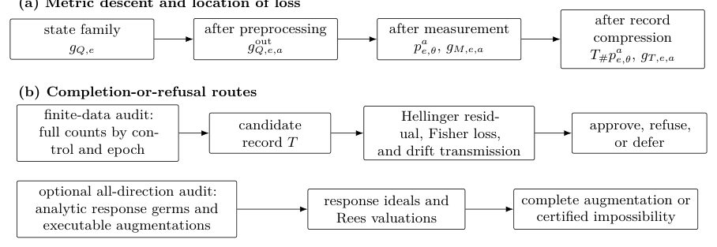
<figcaption class="paper-figure-caption"><b>Fig 1.</b> Figure 1: Information descent and decision routes. Panel (a) locates loss introduced by preprocessing, measurement, and record compression. Panel (b) separates the default finite-data audit from the optional algebraic audit for claims over all analytic control curves. The latter requires analytic response germs and a declared library of physically executable augmentations; it is not inferred from finite counts alone.</figcaption>
</figure>
<figure class="paper-figure-card">
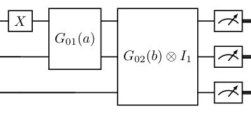
<figcaption class="paper-figure-caption"><b>Fig 2.</b> Figure 2: The three-qubit running circuit. It prepares one excitation, redistributes it by G01(a) and G02(b), and records the computational bitstring. Its ideal law assigns zero probability outside S = {100, 010, 001}.</figcaption>
</figure>
</div>

<p><strong>Summary.</strong> This work develops a comprehensive framework to audit low-dimensional records summarizing quantum circuits, quantifying information loss due to measurement or compression. It merges quantum information theory with algebraic geometry to create an executable 'approve/refuse/defer' decision protocol. This is vital for building reliable quantum hardware by certifying that simplified measurements retain sufficient fidelity to the true quantum process.</p>
<p><strong>Why it may be interesting.</strong> It provides a mathematically rigorous, general framework for quantifying and certifying the information loss when abstracting complex quantum processes into simplified, hardware-friendly metrics, which is crucial for scaling quantum computation.</p>
<details>
<summary>Detailed structure</summary>
<p><strong>Main problem.</strong> The paper addresses the fundamental challenge of determining if a low-dimensional statistical record of a structured quantum circuit accurately preserves the full quantum information, accounting for measurement loss, compression loss, and hardware drift.</p>
<p><strong>Main result.</strong> The authors establish a rigorous, executable 'completion-or-refusal' procedure based on algebraic criteria, allowing for finite-sample decisions (Approve, Refuse, or Defer) regarding the fidelity of the low-dimensional record.</p>
<p><strong>Method.</strong> The methodology combines advanced quantum information metrics (Quantum Fisher Information, Hellinger residual) with tools from algebraic geometry (integral closures, Rees valuations) to create a multi-stage audit framework.</p>
<p><strong>Model / system.</strong> The system involves structured quantum circuits implemented on quantum hardware, whose outcomes are summarized by low-dimensional records. The analysis models the process through stages: initial state, circuit evolution, measurement, and final record compression.</p>
<p><strong>Key observables.</strong> Hellinger residual, simultaneous confidence bounds, quantum Fisher information metrics ($g_{SLD}, g_{Q,e}, g_{T,e,a}$), and the decision outcomes: Approve, Refuse, Defer.</p>
<p><strong>Important parameters / regimes.</strong> Circuit parameters ($   heta$), noise models (avoided assumption), finite-sample size, and the declared loss budget.</p>
<p><strong>Assumptions / limitations.</strong> The method aims to avoid assuming a specific parametric hardware-noise model or a low-dimensional statistical family, though the final experimental validation is limited to specific backends and circuits.</p>
<p><strong>Figures summary.</strong> Figure 1 summarizes two analysis routes: a default finite-data audit and an optional algebraic audit using response ideals, explicitly separating the two decision paths.</p>
<p><strong>Paper structure.</strong> The paper develops a theoretical framework connecting all-arc criteria (algebraic/global) to executable, finite-sample decision procedures (local/experimental), culminating in hardware tests on specific circuit families.</p>
</details>
<details>
<summary>Abstract</summary>
<p>Structured quantum circuits are often summarized by low-dimensional records. Records lose control-dependent information when they merge outcomes whose probabilities respond differently to circuit parameters. We assess this loss without a parametric hardware-noise model or low-dimensional statistical family. Quantum Fisher information bounds premeasurement sensitivity; Fisher metrics of measurements and records describe device-attainable sensitivity. A Hellinger residual measures the response removed by a record, while its local quadratic term is the conditional covariance of the full-outcome score. Simultaneous confidence bounds support approval, refusal, or deferral.   We prove a finite-library completion theorem: executable augmentations terminate with either a record preserving every declared response or proof that no library augmentation removes the loss. For an analytic control germ, integral closures characterize preservation along every analytic control arc, and finitely many Rees valuations detect failure. This state--measurement--record chain connects an all-arc criterion to executable completion or refusal, an attainable-Fisher local kernel criterion, and finite-sample decisions.   A three-qubit calculation separates measurement loss from record loss. IBM experiments on Kingston and Marrakesh test decisions in fixed-particle-number and GHZ families, including negative controls. An end-to-end Kingston experiment reduces calibration shots by 33.3% while meeting prespecified noninferiority criteria on two held-out objectives. In two-epoch IQM Garnet data, median record-level drift is 0.0797 times full-distribution drift, but a significant residual remains in 35 of 36 settings. These experiments validate failure detection on the tested circuits; they do not establish universal compression performance or device quantum Fisher information.</p>
</details>
<p><sub><a href="#top">↑ back to top</a></sub></p>

<p><a id="paper-2609.00639"></a></p>
<h3 id="strengthened-second-law-for-periodic-processes"><a href="http://arxiv.org/abs/2609.00639v1">Strengthened second law for periodic processes</a></h3>
<p><strong>Authors:</strong> Jake Schaefer, Ben Ansbacher, Jan Korbel, David H. Wolpert<br>
<strong>Type:</strong> theory · <strong>Category:</strong> statistical mechanics · <strong>PDF:</strong> <a href="https://arxiv.org/pdf/2609.00639v1">https://arxiv.org/pdf/2609.00639v1</a><br>
<strong>Analysis basis:</strong> full PDF text, analyzed in chunks
<strong>Topic relevance:</strong> <code>non-equilibrium universality</code> <strong>3/5</strong> · <code>driven-dissipative phase transition</code> <strong>1/5</strong></p>
<div class="figure-strip-hint">↔ Scroll figures horizontally</div>
<div class="paper-figures-scroll">
<figure class="paper-figure-card">
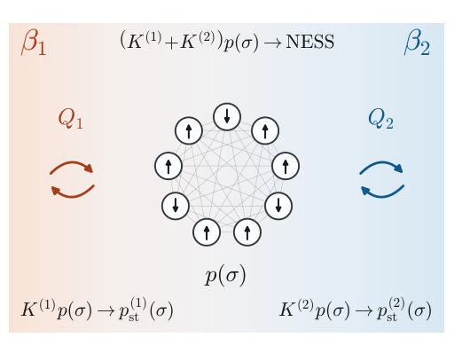
<figcaption class="paper-figure-caption"><b>Fig 1.</b> FIG. 1. Visualization of spin system. Spins coupled to each bath at inverse temperatures β1, β2, and exchange heats Q1, Q2 over time. Each reservoir pushes probability distribu- tion over configurations p(σ) to its own Boltzmann distribu- tion. Thus, in the stationary state for the combined dynamics summed over the reservoirs, there will still be nonzero current, giving a nonequilibrium steady state.</figcaption>
</figure>
<figure class="paper-figure-card">
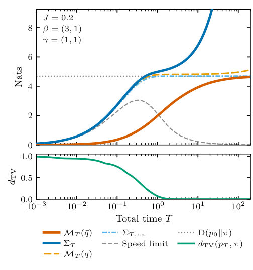
<figcaption class="paper-figure-caption"><b>Fig 2.</b> FIG. 2. Minimal dissipation, MMC at the EP-optimal prior (4), total EP, and nonadiabatic EP as a function of time elapsed for the spin system starting at p0. The long-term minimal dissipation D(p0||π) is plotted as a horizontal dotted line. The total variation distance between the current distri- bution and the NESS dTV(pt, π) is plotted in a separate plot in solid cyan. We see the minimal dissipation is a significant portion of the total EP, whereupon after reaching the fixed point (NESS), the minimal dissipation saturates and residual cost dominates — growing the total EP without bound.</figcaption>
</figure>
<figure class="paper-figure-card">
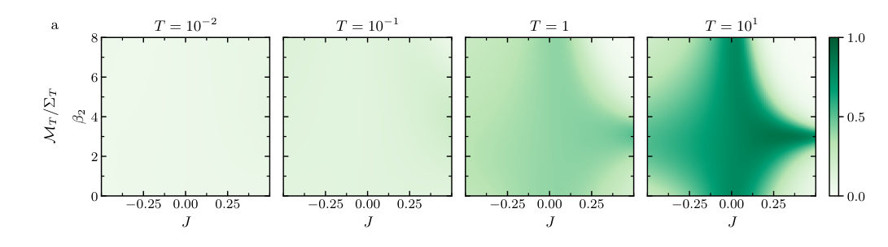
<figcaption class="paper-figure-caption"><b>Fig 3.</b> FIG. 3. Heatmap displaying, for different times T, the ratio of minimal dissipation to total entropy production MT /ΣT as a function of the coupling strength J ∈[−0.5, 0.5] and inverse temperature of the second bath β2 ∈[0, 8.0], where the first bath is fixed at β1 = 3.0 as in the main text. For a large fraction of parameter space, and in particular the anti-ferromagnetic regime, the minimal dissipation is a significant fraction of the total EP.</figcaption>
</figure>
<figure class="paper-figure-card">
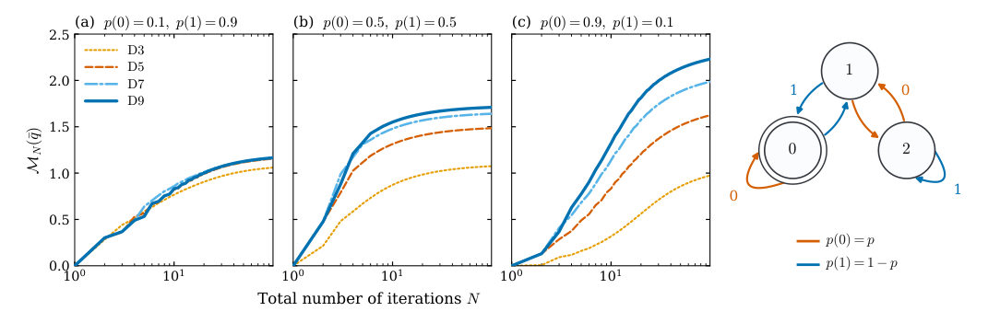
<figcaption class="paper-figure-caption"><b>Fig 4.</b> FIG. 4. (Left) Minimal dissipation MN(¯q) for four different DFAs that all recognize the same language, at different input distributions (p, 1 −p). (Far right) Minimal DFA for recognizing binary representations of integers divisible by three. The initial state is 0 and the accept state is also 0. In the long time limit, the minimal dissipation scales monotonically with the number of redundant states, while in the short time limit there can be crossovers.</figcaption>
</figure>
<figure class="paper-figure-card">
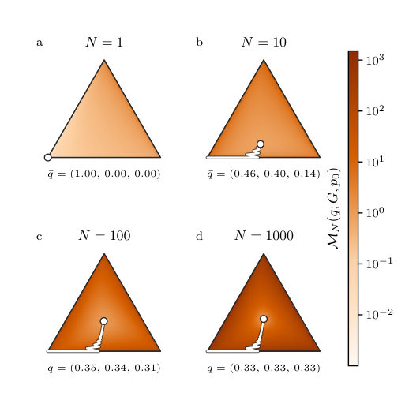
<figcaption class="paper-figure-caption"><b>Fig 5.</b> FIG. 5. Heatmap of MN(q; p0) over the simplex for various values of N for the D3 DFA. Here, p = 0.1. The color coding shows the periodic MMC for choosing any other prior q ̸= ¯q. The white lines represent the trajectory of the POP up until the N-th iteration, indicated by the white dot. The color scale indicates the periodic MMC using any prior other than the POP. Note at N = 1, the POP is just p0.</figcaption>
</figure>
</div>

<p><strong>Summary.</strong> This paper derives a strict, physics-independent lower bound on the entropy production for any system undergoing periodic driving. By analyzing the Mismatch Cost (MMC) over multiple cycles, the authors establish a generalized second law applicable to diverse systems like spin models and digital automata. This result significantly strengthens current understanding of non-equilibrium thermodynamics in time-periodic settings.</p>
<p><strong>Why it may be interesting.</strong> The derivation of a universal, physics-independent bound on entropy production for periodic systems provides a powerful new tool for analyzing non-equilibrium dynamics in complex systems, extending beyond standard Markovian assumptions.</p>
<details>
<summary>Detailed structure</summary>
<p><strong>Main problem.</strong> Deriving a physics-independent lower bound on the entropy production for any periodic process, strengthening the standard second law of thermodynamics.</p>
<p><strong>Main result.</strong> A lower bound on entropy production is established using the Mismatch Cost (MMC) that depends only on the initial distribution and the driving map, regardless of the underlying physical details.</p>
<p><strong>Method.</strong> The analysis uses the Mismatch Cost (MMC) decomposition of a general thermodynamic cost function, optimizing over all possible prior distributions to find a minimal dissipation bound.</p>
<p><strong>Model / system.</strong> The framework applies to general stochastic processes evolving under periodic driving, modeled by repeatedly applying a stochastic map G. Specific applications include the Curie-Weiss model (Ising spins) and Deterministic Finite Automata (DFA).</p>
<p><strong>Key observables.</strong> Entropy Production ($\Sigma_t$), Mismatch Cost (MMC), and the periodic-optimal prior ($ar{q}$).</p>
<p><strong>Important parameters / regimes.</strong> The periodicity of the driving process, the initial distribution $p_0$, and the map $G$.</p>
<p><strong>Assumptions / limitations.</strong> The process is modeled by the repeated application of a single map G, and the analysis relies on the general structure of the MMC decomposition.</p>
<p><strong>Paper structure.</strong> The paper develops the theory by first establishing the general MMC decomposition, then specializing this to periodic processes, and finally applying the derived bounds to specific physical models like the Curie-Weiss model and DFAs.</p>
</details>
<details>
<summary>Abstract</summary>
<p>Many physical systems evolve under periodic driving: the same control protocol is applied again and again, even though the state of the system itself need not return to where it started after each cycle. We derive a physics-independent lower bound on the entropy production of \emph{any} periodic process modeled by the evolution of an initial distribution $p_0$ by a repeated application of the same map $G$. This is a strict strengthening of the second law of thermodynamics for periodic processes. It does not require that the single-period dynamics arise from a CTMC, satisfy (local) detailed balance, or be subject to other typical restrictions. We discuss its application to spins in the Curie-Weiss model and Deterministic Finite Automata, with possible extensions to other uniform computers.</p>
</details>
<p><sub><a href="#top">↑ back to top</a></sub></p>

<p><a id="paper-2609.01037"></a></p>
<h3 id="a-dynamic-intermediate-representation-for-hybrid-quantum-classical-programs"><a href="http://arxiv.org/abs/2609.01037v1">A Dynamic Intermediate Representation for Hybrid Quantum-Classical Programs</a></h3>
<p><strong>Authors:</strong> Alex Rice, Chris Heunen, Tobias Grosser<br>
<strong>Type:</strong> theory · <strong>Category:</strong> quantum information and computing · <strong>PDF:</strong> <a href="https://arxiv.org/pdf/2609.01037v1">https://arxiv.org/pdf/2609.01037v1</a><br>
<strong>Analysis basis:</strong> full PDF text, analyzed in chunks
<strong>Topic relevance:</strong> <code>quantum measurements</code> <strong>3/5</strong></p>
<div class="figure-strip-hint">↔ Scroll figures horizontally</div>
<div class="paper-figures-scroll">
<figure class="paper-figure-card">
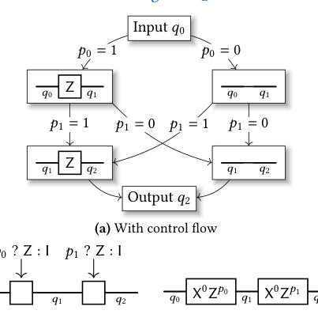
<figcaption class="paper-figure-caption"><b>Fig 1.</b> Figure 1. Graphical representations of two sequential phase flip channels using control flow in (a), and dynamic gates in (b) and (c), with the gate value being generated by arith.select and our XZ gadget respectively. The dataflow is vastly simplified in (b) and (c), where the quantum com- ponent retains its circuit structure. The XZ gadgets in (c) remove the need for the selection operation, allowing the dynamic gates to be fused.</figcaption>
</figure>
<figure class="paper-figure-card">
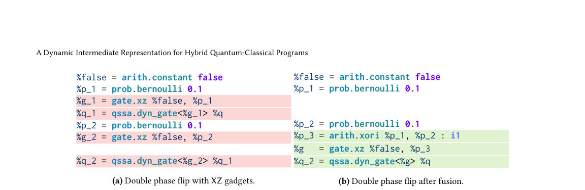
<figcaption class="paper-figure-caption"><b>Fig 2.</b> Figure 2. The XZ gadget allows the phase flip channel to be represented without any selection operations (a). This allows the consecutive dynamic gates to be fused, reducing the program to a single phase flip channel (b).</figcaption>
</figure>
<figure class="paper-figure-card">
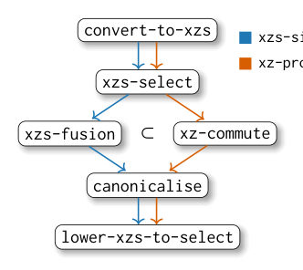
<figcaption class="paper-figure-caption"><b>Fig 3.</b> Figure 3. Optimisation pipelines for XZS gadgets. The left path, xzs-simplify, fuses all adjacent conditional Pauli and Phase gates. The right path, xz-propagation, attempts to move Pauli gates towards the end of the program while performing fusion.</figcaption>
</figure>
<figure class="paper-figure-card">
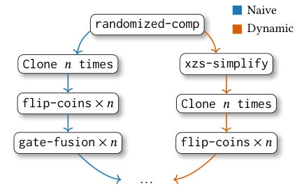
<figcaption class="paper-figure-caption"><b>Fig 4.</b> Figure 4. Two compiler pipelines for generating 𝑛cir- cuits with the randomised compilation algorithm. The naive pipeline represents the state of the art, while the dynamic gate pipeline utilises dynamic gates to delay any cloning until after optimisation.</figcaption>
</figure>
<figure class="paper-figure-card">
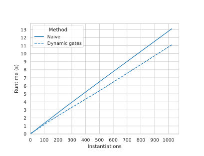
<figcaption class="paper-figure-caption"><b>Fig 5.</b> Figure 5. Time taken to generate 𝑛randomised circuits from a circuit preparing the 10-qubit GHZ state, with the naive and dynamic gate pipelines outlined in Figure 4. With greater values of 𝑛, the dynamic gate pipeline is up to 20% faster.</figcaption>
</figure>
</div>

<p><strong>Summary.</strong> This paper addresses the limitations of static quantum circuit models by proposing a Dynamic Intermediate Representation (IR). This new IR elevates quantum gates to first-class, runtime values, allowing classical computation to dynamically control quantum behavior. It enables the compact representation and optimization of complex hybrid quantum-classical algorithms.</p>
<p><strong>Why it may be interesting.</strong> This work provides a crucial compilation framework for simulating and optimizing complex quantum algorithms that inherently mix classical decision-making with quantum evolution, which is vital for near-term quantum hardware.</p>
<details>
<summary>Detailed structure</summary>
<p><strong>Main problem.</strong> The standard quantum circuit model is too static to effectively represent hybrid quantum-classical applications where gate choices depend on runtime data or measurement outcomes.</p>
<p><strong>Main result.</strong> The authors introduce a new Intermediate Representation (IR) that treats quantum gates as first-class, dynamic values, enabling classical control flow to steer quantum computation.</p>
<p><strong>Method.</strong> The core method is the design of a dynamic IR, realized using MLIR dialects, which incorporates dynamic gate operations (e.g., qssa.dyn_gate) alongside static quantum operations.</p>
<p><strong>Model / system.</strong> The model concerns hybrid quantum-classical programs, where quantum operations are combined with classical data and control flow. The IR supports representing quantum states and operations using value semantics (SSA form).</p>
<p><strong>Key observables.</strong> Gate values (e.g., I, X, Y, Z, S), phase flips, and the ability to model conditional quantum operations.</p>
<p><strong>Important parameters / regimes.</strong> The structure of the quantum gates and the classical control flow determining gate execution.</p>
<p><strong>Assumptions / limitations.</strong> The traditional circuit model is inherently static, and the XZ gadget is used to simplify the representation of conditional Pauli gates.</p>
<p><strong>Figures summary.</strong> Figures illustrate the dynamic gate model's ability to represent complex sequences, such as two concatenated probabilistic phase-flip channels or double phase flips, using dynamic control flow compared to static methods.</p>
<p><strong>Paper structure.</strong> The paper introduces the need for dynamic gates, details the XZ gadget for conditional Pauli gates, describes the IR structure using MLIR dialects (qssa.dyn_gate), and shows how this framework supports optimizations and analysis for hybrid programs.</p>
</details>
<details>
<summary>Abstract</summary>
<p>Quantum compilers typically follow the circuit model, representing programs as fixed sequences of gates. This static view breaks down in hybrid quantum-classical applications, where gate choices depend on runtime data or measurement results. We introduce a new Intermediate Representation (IR) that elevates gates to first-class values, enabling their dynamic creation, composition, and control. This unified representation allows classical computation to steer quantum behaviour, capturing phenomena including stochastic gate selection, adaptive error correction, and measurement-driven computation within a single framework. Case studies in noise modelling, randomised compilation, error correction, and measurement-based quantum computing show that our IR expresses these programs compactly and supports optimisations that were not possible in the circuit model. Evaluation on a benchmark suite of hybrid quantum-classical programs indicates that our IR represents programs compactly and facilitates compiler analysis and transformation.</p>
</details>
<p><sub><a href="#top">↑ back to top</a></sub></p>

<p><a id="paper-2609.01605"></a></p>
<h3 id="depth-1-expanders-on-the-unitary-group-and-applications"><a href="http://arxiv.org/abs/2609.01605v1">Depth-1 expanders on the unitary group and applications</a></h3>
<p><strong>Authors:</strong> Anurag Anshu, Shankar Balasubramanian, Jonas Haferkamp, Aram W. Harrow, Xinyu Tan<br>
<strong>Type:</strong> theory · <strong>Category:</strong> strongly correlated electrons · <strong>PDF:</strong> <a href="https://arxiv.org/pdf/2609.01605v1">https://arxiv.org/pdf/2609.01605v1</a><br>
<strong>Analysis basis:</strong> full PDF text, analyzed in chunks
<strong>Topic relevance:</strong> <code>analog quantum simulation</code> <strong>3/5</strong></p>
<div class="figure-strip-hint">↔ Scroll figures horizontally</div>
<div class="paper-figures-scroll">
<figure class="paper-figure-card">
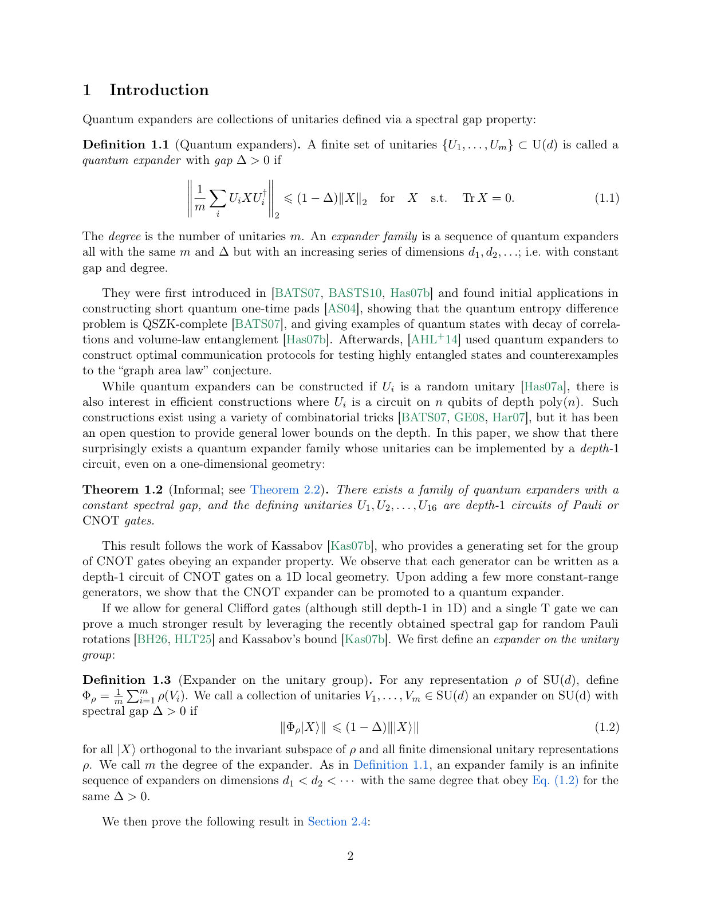
<figcaption class="paper-figure-caption"><b>Fig 1.</b> Low-resolution page preview, page 2</figcaption>
</figure>
<figure class="paper-figure-card">
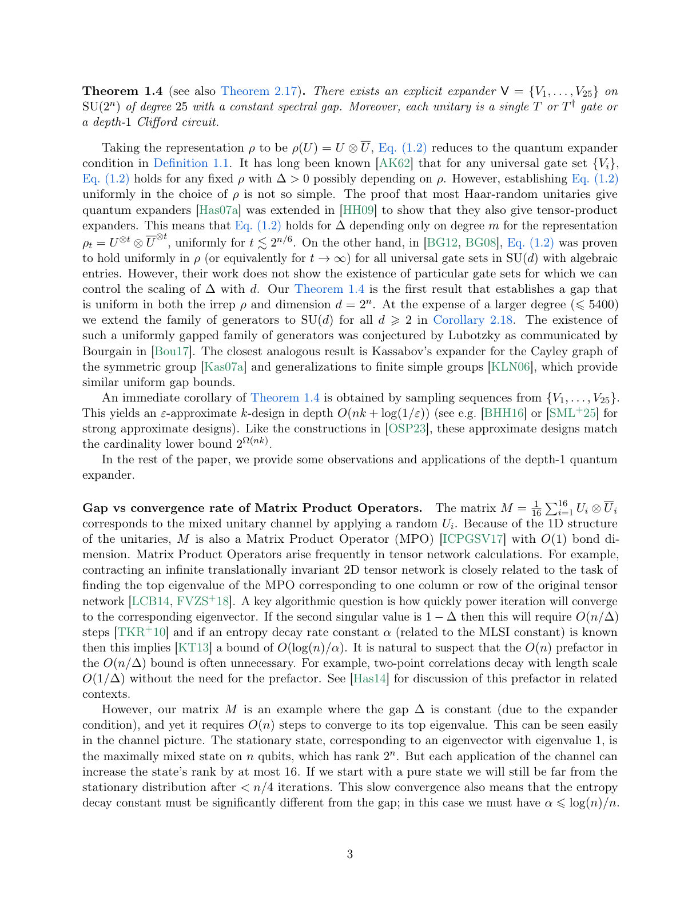
<figcaption class="paper-figure-caption"><b>Fig 2.</b> Low-resolution page preview, page 3</figcaption>
</figure>
<figure class="paper-figure-card">
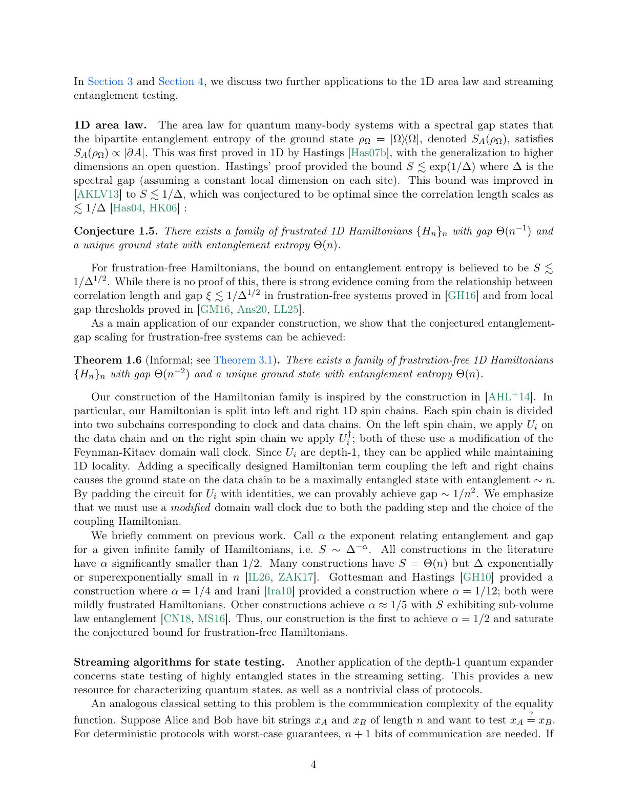
<figcaption class="paper-figure-caption"><b>Fig 3.</b> Low-resolution page preview, page 4</figcaption>
</figure>
<figure class="paper-figure-card">
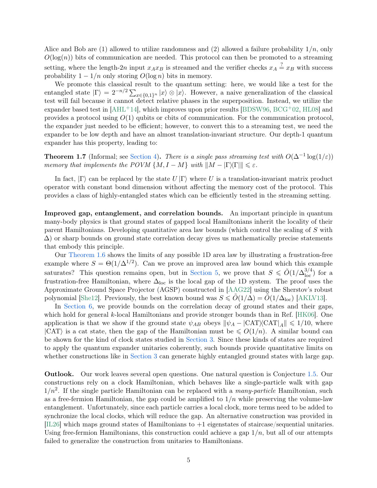
<figcaption class="paper-figure-caption"><b>Fig 4.</b> Low-resolution page preview, page 5</figcaption>
</figure>
<figure class="paper-figure-card">
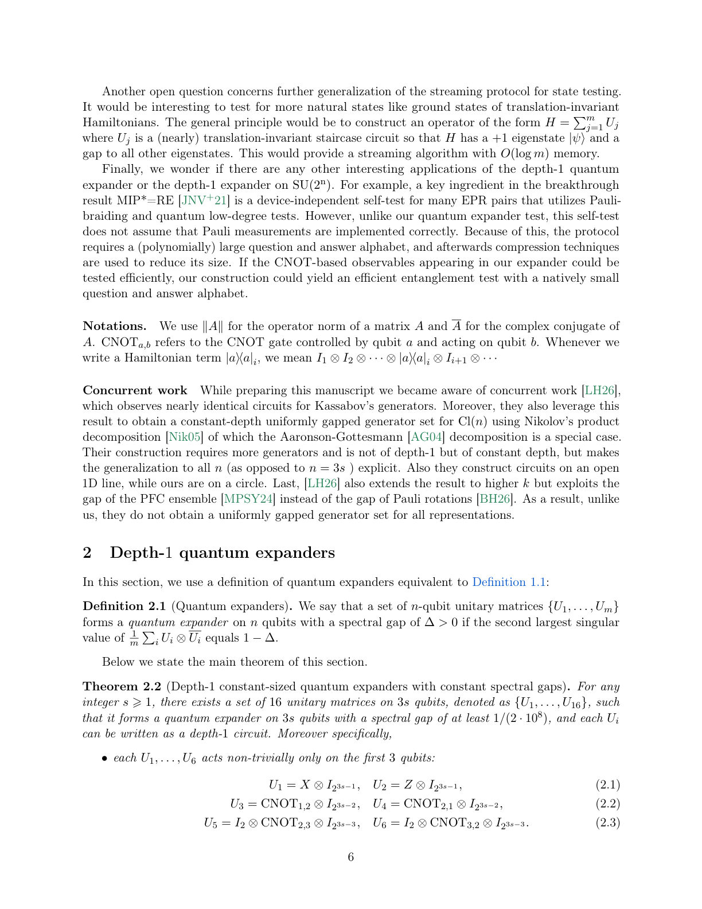
<figcaption class="paper-figure-caption"><b>Fig 5.</b> Low-resolution page preview, page 6</figcaption>
</figure>
</div>

<p><strong>Summary.</strong> This paper develops efficient quantum expanders implementable with shallow circuits and applies them to construct 1D quantum Hamiltonians. The key achievement is demonstrating a construction that realizes the conjectured optimal relationship between the ground state entanglement entropy and the spectral gap ($S \propto \Delta^{-1/2}$). This advances the understanding of entanglement scaling in gapped quantum systems.</p>
<p><strong>Why it may be interesting.</strong> The explicit construction of Hamiltonians achieving the conjectured optimal entanglement-gap scaling ($\alpha=1/2$) is highly relevant for understanding the fundamental limits of entanglement in gapped quantum phases, which is central to AMO physics.</p>
<details>
<summary>Detailed structure</summary>
<p><strong>Main problem.</strong> The paper addresses constructing quantum expanders with efficient circuit implementations and establishing optimal relationships between spectral gap and entanglement entropy in 1D quantum systems.</p>
<p><strong>Main result.</strong> They constructed a family of frustration-free 1D Hamiltonians achieving the conjectured optimal entanglement-gap scaling $S = \Theta(\Delta^{-1/2})$, and developed depth-1 quantum expanders on the unitary group.</p>
<p><strong>Method.</strong> The work combines the construction of quantum expanders (using Pauli/CNOT gates) with theoretical analysis of 1D Hamiltonians, relating spectral gaps to entanglement entropy via specific constructions.</p>
<p><strong>Model / system.</strong> The models involve quantum expanders on the unitary group $U(d)$ and $SU(d)$, and 1D quantum many-body systems described by Hamiltonians $\{H_n\}$ that are engineered using these expanders.</p>
<p><strong>Key observables.</strong> Spectral Gap ($\Delta$), Bipartite Entanglement Entropy ($S$), and the scaling exponent $\alpha$ relating $S$ and $\Delta$.</p>
<p><strong>Important parameters / regimes.</strong> The dimension $n$ of the system, the constant gap $\Delta$, and the required circuit depth (achieved to be depth-1).</p>
<p><strong>Assumptions / limitations.</strong> The primary assumption is the conjectured optimal scaling $S = \Theta(\Delta^{-1/2})$ for frustration-free 1D Hamiltonians, which the authors successfully achieve a construction for.</p>
<p><strong>Figures summary.</strong> Not specified in the notes, but the context implies figures illustrating the expander construction, the Hamiltonian family, and the scaling relationship between $S$ and $\Delta$.</p>
<p><strong>Paper structure.</strong> The paper proceeds by first defining and constructing depth-1 quantum expanders. It then applies these expanders to build a family of frustration-free 1D Hamiltonians, proving the optimal entanglement-gap scaling. Finally, it extends the expander concept to the unitary group for applications like state testing.</p>
</details>
<details>
<summary>Abstract</summary>
<p>We construct a constant-degree and constant-gap quantum expander on $n$ qubits where each unitary can be implemented by a depth-$1$ and 1D circuit of Pauli or CNOT gates. We provide two applications of this expander. First, we use it to construct a family of frustration-free 1D Hamiltonians whose ground states obey the entanglement-gap relation $S = Θ(Δ^{-1/2})$; this is believed to be optimal, but achieving it had been open. Second, we use it to provide a streaming protocol that tests for closeness to a class of 1D volume-law entangled states.   Moreover, we extend our quantum expander to a constant-degree and constant-gap expander on the unitary group where each unitary is a single $T$ gate, a single $T^{\dagger}$ gate, or a depth-$1$ Clifford circuit. This implies that a random sequence of unitaries from the expander yields a gapped walk on a dense subgroup of the unitary group. This improves upon previous work by Bourgain and Gamburd which did not control the dependence of the gap on the dimension.</p>
</details>
<p><sub><a href="#top">↑ back to top</a></sub></p>

<p><a id="paper-2609.01373"></a></p>
<h3 id="local-gaussian-bounds-on-the-non-destructive-discrimination-of-two-mode-squeezed-states"><a href="http://arxiv.org/abs/2609.01373v1">Local Gaussian bounds on the non-destructive discrimination of two-mode squeezed states</a></h3>
<p><strong>Authors:</strong> Mi-Jung So, James Moran, Youngrong Lim, Mahn-Soo Choi, Hyukjoon Kwon<br>
<strong>Type:</strong> theory · <strong>Category:</strong> quantum information and computing · <strong>PDF:</strong> <a href="https://arxiv.org/pdf/2609.01373v1">https://arxiv.org/pdf/2609.01373v1</a><br>
<strong>Analysis basis:</strong> full PDF text, analyzed in chunks
<strong>Topic relevance:</strong> <code>quantum measurements</code> <strong>3/5</strong></p>
<div class="figure-strip-hint">↔ Scroll figures horizontally</div>
<div class="paper-figures-scroll">
<figure class="paper-figure-card">
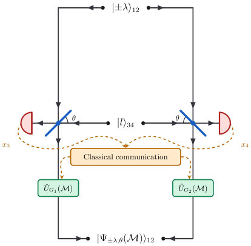
<figcaption class="paper-figure-caption"><b>Fig 1.</b> FIG. 1. General local Gaussian circuit with one adap- tive stage for the non-destructive discrimination of two-mode squeezed vacua. Each party mixes the received signal mode (1 or 2) with an ancillary mode (3 or 4) on a local beamsplitter of angle θ, performs homodyne detection on the ancillary output to obtain M = {x3, x4}, and—conditioned on the classically communicated outcomes—applies a single-mode Gaussian op- eration ˆUGi(M) to the surviving signal mode.</figcaption>
</figure>
<figure class="paper-figure-card">
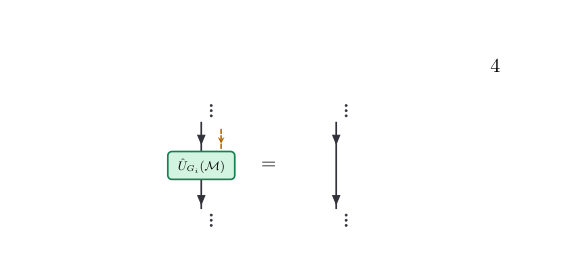
<figcaption class="paper-figure-caption"><b>Fig 2.</b> FIG. 2. Simplest scheme with an initial TMSV state | ± λ⟩ prepared by Charlie and distributed to Alice (left) and Bob (right). Each party mixes the received mode with an auxiliary vacuum mode |0⟩using a local beamsplitter with parameter θ. Both parties then perform homodyne detection on one of the output modes, producing outcomes x3 and x4, while the remaining mode forms the post-measurement state used for the fidelity readout. We collect these outcomes into the classical set M = {x3, x4}. This corresponds to choosing l = 0 and ˆUGi(M) = I, the identity operator, in the general circuit.</figcaption>
</figure>
<figure class="paper-figure-card">
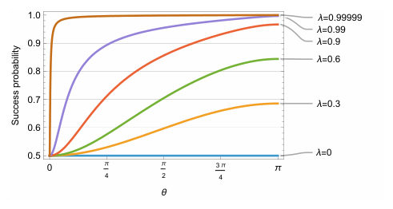
<figcaption class="paper-figure-caption"><b>Fig 3.</b> FIG. 3. Success probabilities of the simplest scheme (Fig. 2) and the measurement-based displacement circuit (Fig. 4), as functions of θ for several values of λ, which coincide for the same setting with initial state (|λ⟩) and two vacuum nodes.</figcaption>
</figure>
<figure class="paper-figure-card">
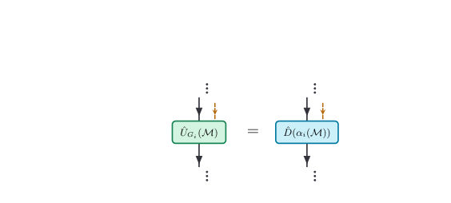
<figcaption class="paper-figure-caption"><b>Fig 4.</b> FIG. 4. Measurement-based displacement scheme. Con- ditioned on the set of measurement outcomes M = {x3, x4} obtained on modes 3 and 4, the displacement gates ˆD (αi(M)) (i = 1, 2) shift the post-measurement state to the phase-space origin, rendering the output fidelity indepen- dent of M and optimal. This corresponds to choosing l = 0 and ˆUGi(M) = ˆD(αi(M)) in the general circuit.</figcaption>
</figure>
<figure class="paper-figure-card">
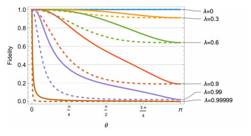
<figcaption class="paper-figure-caption"><b>Fig 5.</b> FIG. 5. Fidelity as a function of θ for the simplest scheme (Fig. 2) and the measurement-based displacement circuit (Fig. 4), shown for several values of λ. Each value of λ is repre- sented by a distinct color, with the dashed and solid curves of the same color corresponding to the simplest scheme and the measurement-based displacement circuit, respectively. The latter consistently achieves higher fidelity, demonstrating the advantage of this approach.</figcaption>
</figure>
</div>

<p><strong>Summary.</strong> This paper develops a theoretical framework to quantify the trade-off between successfully identifying a quantum state and disturbing it during the measurement process. It focuses on two-mode squeezed vacuum states using local Gaussian measurements. The key finding is that incorporating pre-shared entanglement can enhance discrimination beyond the standard theoretical limits.</p>
<p><strong>Why it may be interesting.</strong> It provides a crucial infinite-dimensional generalization of the information-disturbance tradeoff, extending established concepts from finite-dimensional quantum systems to continuous-variable quantum optics.</p>
<details>
<summary>Detailed structure</summary>
<p><strong>Main problem.</strong> The work analyzes the non-destructive discrimination of two-mode squeezed vacuum (TMSV) states using local Gaussian measurements.</p>
<p><strong>Main result.</strong> The authors establish an explicit tradeoff relation between success probability and measurement-induced disturbance, and show that pre-shared entanglement allows exceeding the standard local Gaussian bound.</p>
<p><strong>Method.</strong> The analysis involves deriving the success probability and fidelity using Gaussian state theory, optimizing a score function ($P \cdot F$), and comparing different measurement protocols.</p>
<p><strong>Model / system.</strong> The system involves two-mode squeezed vacuum states, which are continuous-variable (CV) Gaussian states. The process is modeled using local Gaussian measurements and potentially pre-shared entanglement.</p>
<p><strong>Key observables.</strong> Success Probability ($P$), Fidelity ($F$), and the combined score function ($P \cdot F$).</p>
<p><strong>Important parameters / regimes.</strong> Squeezing Parameter ($\lambda$), beamsplitter angle ($    heta$), and the strength of pre-shared entanglement.</p>
<p><strong>Assumptions / limitations.</strong> The analysis is restricted to the GLOCC1 class (at most one adaptive stage) for the primary bound derivation.</p>
<p><strong>Figures summary.</strong> Figures illustrate the general local Gaussian circuit for discrimination, comparing performance across different measurement schemes (simplest vs. displacement vs. squeezing) as a function of the beam splitter angle $  heta$.</p>
<p><strong>Paper structure.</strong> The paper progresses by first establishing the general framework for local Gaussian discrimination, then optimizing the score function $P \cdot F$ for various measurement strategies, and finally deriving the optimal trade-off relation.</p>
</details>
<details>
<summary>Abstract</summary>
<p>Typical measurement setups in quantum systems are destructive, meaning that states are irretrievably altered after measurement. In this work, we analyse non-destructive discrimination of two two-mode squeezed vacuum states using local Gaussian measurements. We investigate a tradeoff relation between the success probability of discrimination and the fidelity of the resulting state with the initial state, and construct a protocol given by local Gaussian measurements, which is optimal within our numerically explored class. We also extend to the case where we allow for additional pre-shared entanglement, and show that this regime allows us to exceed the standard local Gaussian bound for the fidelity-success probability tradeoff. Our work provides a natural extension of the tradeoff between information gain and disturbance in entangled-state discrimination, previously established for finite-dimensional quantum systems, to infinite-dimensional continuous-variable systems.</p>
</details>
<p><sub><a href="#top">↑ back to top</a></sub></p>

<p><a id="paper-2609.00235"></a></p>
<h3 id="optimization-landscape-geometry-in-vqe-for-frustrated-quantum-spin-models"><a href="http://arxiv.org/abs/2609.00235v1">Optimization Landscape Geometry in VQE for Frustrated Quantum Spin Models</a></h3>
<p><strong>Authors:</strong> Vojtěch Novák, Ivan Zelinka, Swagatam Das, Martin Beseda<br>
<strong>Type:</strong> theory · <strong>Category:</strong> disordered systems and neural networks · <strong>PDF:</strong> <a href="https://arxiv.org/pdf/2609.00235v1">https://arxiv.org/pdf/2609.00235v1</a><br>
<strong>Analysis basis:</strong> full PDF text, analyzed in chunks
<strong>Topic relevance:</strong> <code>analog quantum simulation</code> <strong>3/5</strong></p>
<div class="figure-strip-hint">↔ Scroll figures horizontally</div>
<div class="paper-figures-scroll">
<figure class="paper-figure-card">
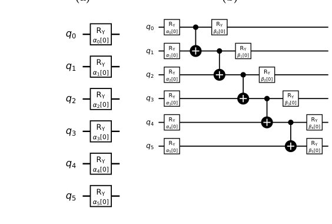
<figcaption class="paper-figure-caption"><b>Fig 1.</b> FIG. 1. (a) Product-state ansatz with parameter dimension D = N. (b) Hardware-efficient Ry–CNOT–Ry ansatz with D = 2N. Schematics illustrate N = 6 qubits; the entangling layer in (b) follows Eq. (8).</figcaption>
</figure>
<figure class="paper-figure-card">
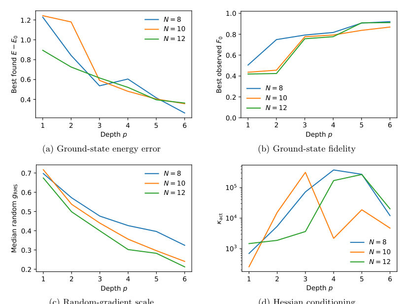
<figcaption class="paper-figure-caption"><b>Fig 2.</b> FIG. 2. Effect of increasing the Q3 hardware-efficient ansatz depth. (a) Best-found ground-state energy error Ebest −E0. (b) Best observed exact ground-state fidelity. (c) Median RMS parameter-shift gradient over random parameter vectors. (d) Active Hessian condition number at the best-found energy point. Depth improves physical reachability, while the deeper landscapes remain strongly anisotropic. The random-gradient scale decreases with depth but remains finite over the studied range.</figcaption>
</figure>
<figure class="paper-figure-card">
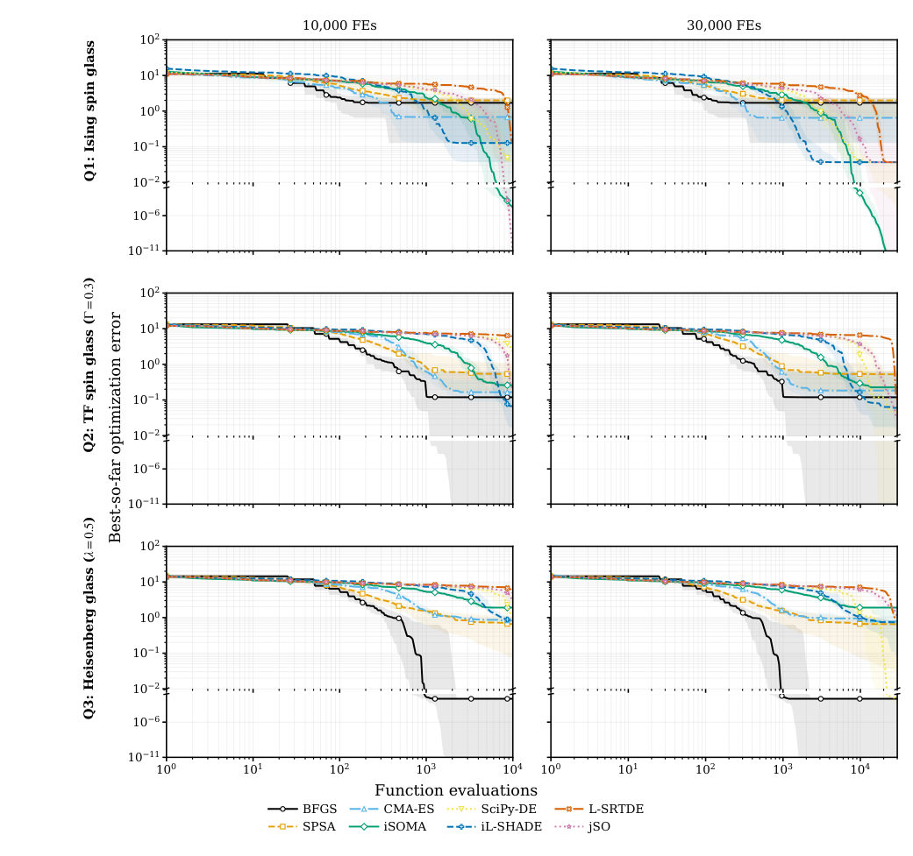
<figcaption class="paper-figure-caption"><b>Fig 3.</b> FIG. 3. Median best-so-far optimization error with interquartile ranges for the three N = 12 benchmarks at 10 000 and 30 000 FEs. For Q1 the reference is E0, for Q2 the stored continuation reference, and for Q3 Eref. The broken logarithmic axis preserves resolution in both the main error band and the near-zero regime.</figcaption>
</figure>
<figure class="paper-figure-card">
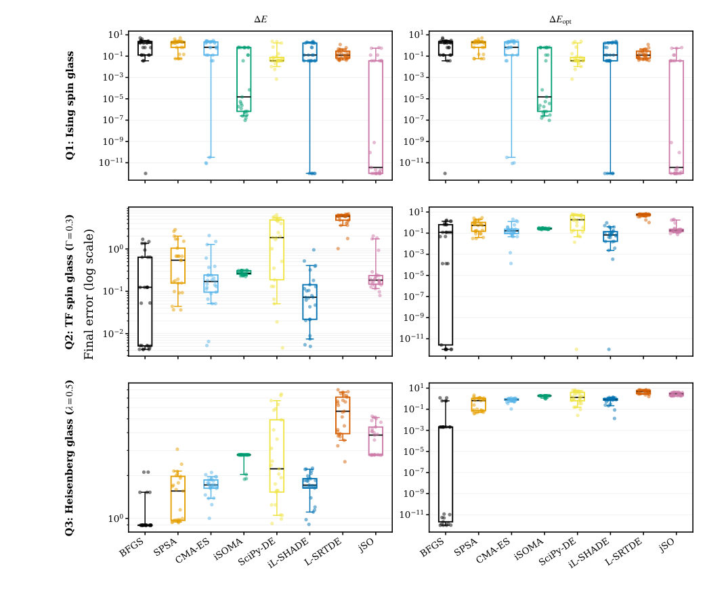
<figcaption class="paper-figure-caption"><b>Fig 4.</b> FIG. 4. Final-error distributions for N = 12 at 10 000 FEs. Boxes show the median and interquartile range, whiskers span the 5th–95th percentiles, and points are individual runs. Numerical zeros are shown at the plotting floor 10−12.</figcaption>
</figure>
<figure class="paper-figure-card">
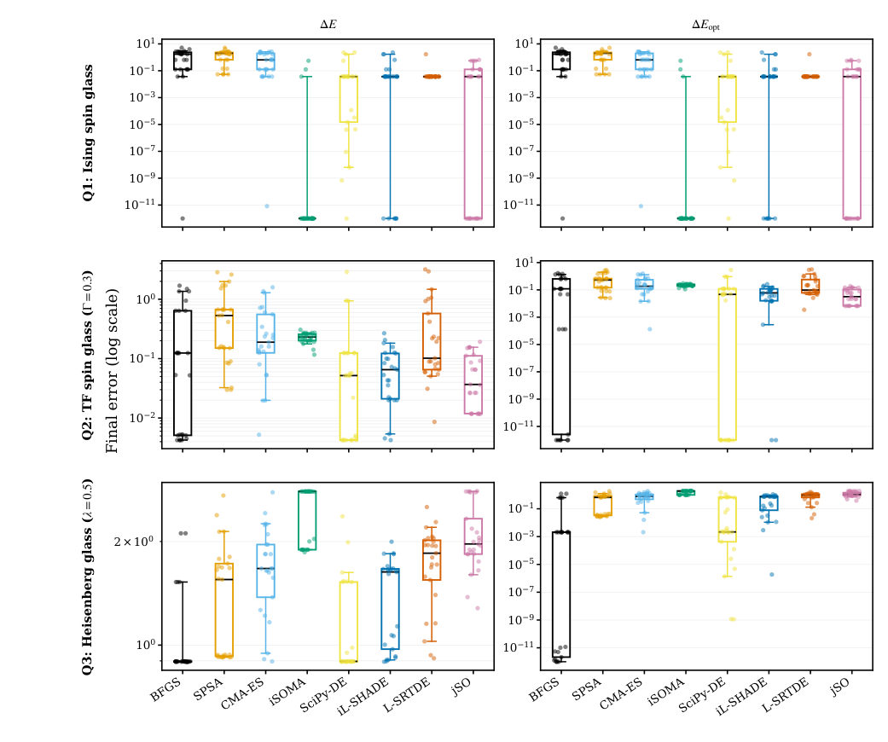
<figcaption class="paper-figure-caption"><b>Fig 5.</b> FIG. 5. Final-error distributions for N = 12 at 30 000 FEs, using the same conventions as Fig. 4. The larger budget exposes which population-based methods continue to improve after the smaller-budget comparison has saturated.</figcaption>
</figure>
</div>

<p><strong>Summary.</strong> This work rigorously benchmarks various classical optimization algorithms for VQE applied to frustrated quantum spin models. By characterizing the geometry of the energy landscape, the authors demonstrate that optimization performance is highly dependent on the model structure and that the total error budget must account separately for optimization failure and the inherent variational gap. This guides the development of more robust quantum simulation protocols.</p>
<p><strong>Why it may be interesting.</strong> It provides a deep, quantitative analysis of the limitations of classical optimization techniques when applied to complex, frustrated quantum many-body systems, which is crucial for designing practical quantum algorithms.</p>
<details>
<summary>Detailed structure</summary>
<p><strong>Main problem.</strong> The paper benchmarks classical optimization algorithms for Variational Quantum Eigensolver (VQE) calculations to understand how the underlying Hamiltonian-ansatz landscape geometry dictates performance.</p>
<p><strong>Main result.</strong> Optimizer performance varies significantly across different frustrated spin model hierarchies, and the study successfully separates optimization error from the inherent variational gap error.</p>
<p><strong>Method.</strong> The authors benchmark eight classical optimizers (local, stochastic, evolutionary, etc.) using exact statevector simulation on controlled spin models, characterizing the energy landscape geometry.</p>
<p><strong>Model / system.</strong> The study uses frustrated quantum spin models, including diagonal Ising glasses, transverse-field Ising, and anisotropic Heisenberg models. The Hamiltonian is parameterized to cover these different physical regimes.</p>
<p><strong>Key observables.</strong> Optimization error ($\Delta E_{	ext{opt}}$), ground-state energy error ($\Delta E$), and the variational gap ($E_{	ext{ref}} - E_0$). Fidelity is also used as a diagnostic.</p>
<p><strong>Important parameters / regimes.</strong> The comparison involves varying circuit depth (from product-state to hardware-efficient ansatz) and the model parameters ($\Gamma, \lambda$) defining the Hamiltonian.</p>
<p><strong>Assumptions / limitations.</strong> The analysis relies on exact statevector simulation to isolate the intrinsic landscape from finite-shot noise, and it distinguishes between optimization difficulty and variational expressivity limits.</p>
<p><strong>Figures summary.</strong> Figure 1 illustrates the two ansatz architectures (product-state vs. hardware-efficient) used for the different models.</p>
<p><strong>Paper structure.</strong> The paper systematically benchmarks optimizers across a hierarchy of frustrated spin models (Q1, Q2, Q3), characterizing the landscape geometry and quantifying the sources of error in VQE performance.</p>
</details>
<details>
<summary>Abstract</summary>
<p>We benchmark eight classical optimizers for exact-statevector VQE calculations on a controlled hierarchy of frustrated spin models, ranging from a diagonal Ising glass to transverse-field Ising and anisotropic Heisenberg models. The benchmark includes local, stochastic-gradient, evolutionary, covariance-adaptation, and swarm-based optimization methods under matched function-evaluation budgets. To understand their performance beyond final energies, we characterize the underlying Hamiltonian--ansatz landscapes in terms of local minima, gradients, curvature, and ground-state reachability. We use simple variational circuits, from an $R_y$ product-state ansatz for the diagonal model to shallow $R_y$--CNOT hardware-efficient circuits for the noncommuting models, and study how increasing circuit depth changes their expressivity, reachability, and optimization geometry. We find that optimizer performance changes substantially across the model hierarchy and is closely connected to landscape structure, while the variational gap represents a separate source of error. These results show how classical optimization, variational expressivity, and landscape geometry jointly determine VQE performance for frustrated spin models.</p>
</details>
<p><sub><a href="#top">↑ back to top</a></sub></p>

<p><a id="paper-2609.01049"></a></p>
<h3 id="qilp-0-constructing-observational-declarative-twins-of-quantum-circuits"><a href="http://arxiv.org/abs/2609.01049v1">QILP-0: Constructing Observational Declarative Twins of Quantum Circuits</a></h3>
<p><strong>Authors:</strong> Marina de la Cruz Echeandía, César Luis Alonso, Tony Ribeiro, Alfonso Ortega de la Puente<br>
<strong>Type:</strong> both · <strong>Category:</strong> quantum information and computing · <strong>PDF:</strong> <a href="https://arxiv.org/pdf/2609.01049v1">https://arxiv.org/pdf/2609.01049v1</a><br>
<strong>Analysis basis:</strong> full PDF text, analyzed in chunks
<strong>Topic relevance:</strong> <code>quantum measurements</code> <strong>3/5</strong></p>
<div class="figure-strip-hint">↔ Scroll figures horizontally</div>
<div class="paper-figures-scroll">
<figure class="paper-figure-card">
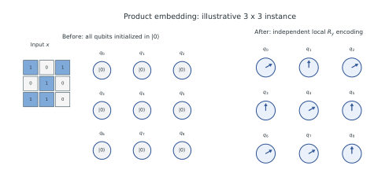
<figcaption class="paper-figure-caption"><b>Fig 1.</b> Figure 1: Product embedding as a local state transformation. A 3×3 instance is shown for readability. Each binary pixel 𝑥𝑗is assigned to qubit 𝑞𝑗, initially prepared in |0⟩, and independently encoded by 𝑅𝑌(𝛼𝑥𝑗) with 𝛼= 𝜋∕3. No two-qubit interaction is present. The reported experiments use 𝐿= 4, … , 10, rather than the illustrative 𝐿= 3 instance.</figcaption>
</figure>
<figure class="paper-figure-card">
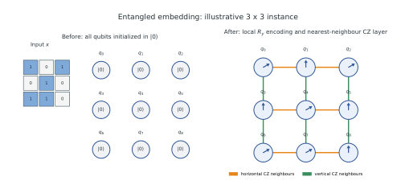
<figcaption class="paper-figure-caption"><b>Fig 2.</b> Figure 2: Local encoding followed by grid-neighbour entangle- ment. The initial state and local 𝑅𝑌(𝛼𝑥𝑗) rotations are identical to those of the product embedding. The encoded qubits are then coupled through CZ gates on all horizontal and vertical nearest-neighbour edges. The 3 × 3 grid is illustrative; the reported experiments use the corresponding 𝐿×𝐿connectivity for 𝐿= 4, … , 10.</figcaption>
</figure>
<figure class="paper-figure-card">
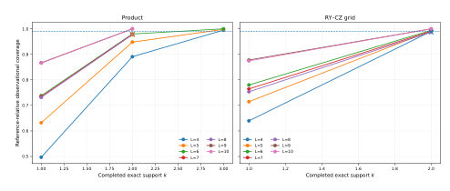
<figcaption class="paper-figure-caption"><b>Fig 3.</b> Figure 3: Incremental reference-relative observational coverage for the product and grid-CZ embeddings. Curves include only completed exact-support layers within each run’s declared reference horizon. The dashed line marks the 0.99 criterion; crosses identify runs whose next candidate support was an- alyzed geometrically but rejected by the downstream post- selection feature budget.</figcaption>
</figure>
<figure class="paper-figure-card">
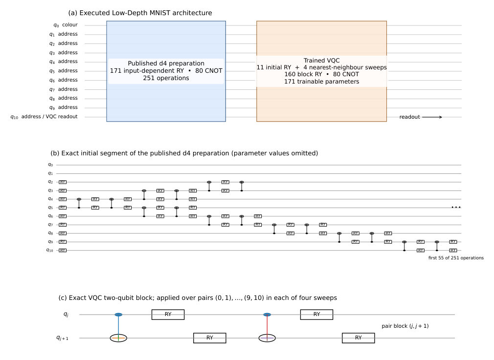
<figcaption class="paper-figure-caption"><b>Fig 4.</b> Figure 4: Executed Low-Depth MNIST architecture used for the before/after comparison. Panel (a) summarizes the 11-qubit processing chain: the published depth-4 (d4) preparation is followed by the trained variational classifier. Qubit 𝑞0 is the FRQI colour qubit, 𝑞1, … , 𝑞10 form the address register, and 𝑞10 is also used as the VQC readout qubit. Panel (b) shows an exact initial segment of the executed d4 preparation; gate ordering is preserved while numerical rotation angles are omitted for readability. The complete d4 layout contains 171 input-dependent 𝑅𝑌rotations and 80 CNOT gates. Panel (c) shows the exact two-qubit VQC block CNOT–RY–RY–CNOT–RY–RY, which is applied over the ten...</figcaption>
</figure>
<figure class="paper-figure-card">
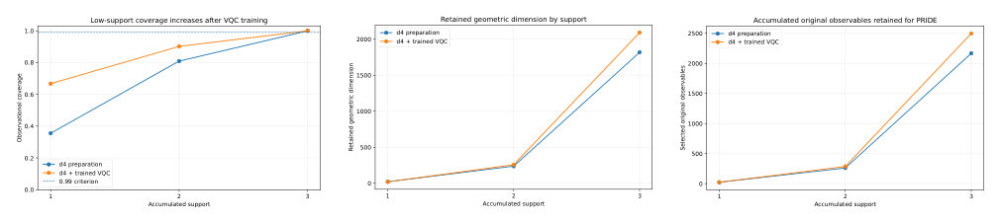
<figcaption class="paper-figure-caption"><b>Fig 5.</b> Figure 5: Before/after observational geometry. Left: accumulated coverage over complete support blocks. Centre: accumulated retained geometric dimension. Right: accumulated number of original observables retained for the symbolic stage. The trained representation accumulates more coverage at supports 1 and 2 while exhibiting a larger retained geometric dimension and selected-observable vocabulary at support 3.</figcaption>
</figure>
</div>

<p><strong>Summary.</strong> This paper presents QILP-0, a method to construct 'observational declarative twins' for quantum circuits, aiming to solve the interpretability problem in QML. It builds a formal, logical theory that reconstructs observed quantum behavior by tracking observables through a defined scope. Validation on large-scale qubit systems and image data confirms the theory's ability to achieve perfect, conflict-free reconstruction.</p>
<p><strong>Why it may be interesting.</strong> It provides a novel, logically rigorous framework for quantum circuit interpretability that moves beyond simple learned representations by grounding the explanation in traceable, discrete logical statements derived directly from observable measurements.</p>
<details>
<summary>Detailed structure</summary>
<p><strong>Main problem.</strong> The paper addresses the opacity in Quantum Machine Learning (QML) by developing a method to reconstruct an explicitly scoped, traceable declarative theory of a quantum circuit's observable behavior.</p>
<p><strong>Main result.</strong> The proposed QILP-0 theory successfully achieved complete, conflict-free reconstruction of observed relations with strict accuracy of one in both native-discrete (Bars &amp; Stripes) and continuous (Low-Depth MNIST) validation settings.</p>
<p><strong>Method.</strong> It introduces QXymb, a framework culminating in QILP-0, which constructs a finite multi-valued propositional logic program by traversing observables incrementally and mapping latent structure deterministically back to original observable columns.</p>
<p><strong>Model / system.</strong> The system involves general quantum circuits, specifically utilizing Pauli observables for the QILP-0 specialization. Validation tests include product and grid-CZ embeddings up to 100 qubits and low-depth MNIST digit-0/1 instances.</p>
<p><strong>Key observables.</strong> Observable responses, reference-relative coverage, and the resulting finite multi-valued propositional logic program (the 'observational declarative twin').</p>
<p><strong>Important parameters / regimes.</strong> Observational scope, structural grading, observational reference horizon, and the number of qubits (16 to 100).</p>
<p><strong>Assumptions / limitations.</strong> The method explicitly separates logical exactness from numerical/backend uncertainty, retaining the latter as audit metadata. It does not claim to reconstruct the complete quantum behavior.</p>
<p><strong>Paper structure.</strong> The paper introduces the QXymb framework, details the QILP-0 specialization for constructing declarative twins, outlines the incremental traversal and discretization process, and validates the method using two complementary settings: exhaustive Bars &amp; Stripes experiments and Low-Depth MNIST analyses.</p>
</details>
<details>
<summary>Abstract</summary>
<p>This paper introduces QXymb, a general framework for constructing observational declarative twins of quantum circuits, and develops QILP-0, its first complete order-0 specialization. QILP-0 constructs a finite multi-valued propositional logic program from observed circuit behaviour within a declared observational scope.   The pipeline traverses a declared family of quantum observables incrementally according to a reproducible structural grading and a declared observational reference horizon. Progress is quantified through reference-relative coverage against a fixed target-independent reference. Observable responses are organized through target-independent geometry, while retained latent structure is mapped deterministically back to original observable columns before symbolic processing, preserving observational semantics and provenance.   Selected observable profiles are converted into a finite relation through admissible target-independent discretization. The target is used only afterwards to audit twin-admissibility and induce the declarative theory. A theory is certified as an exact observational declarative twin when it completely and correctly reconstructs the resulting finite task-conditioned discrete relation. Logical exactness is therefore separated from numerical, backend, provider, and discretization uncertainty, which is retained as audit metadata.   Validation uses two complementary QML settings. Exhaustive Bars &amp; Stripes experiments compare product and grid-CZ embeddings from 16 to 100 qubits and exercise the native-discrete branch. Low-Depth MNIST analyses all 14,708 digit-0/1 instances before and after a trained variational quantum transformation and exercises continuous discretization. In every reported relation, the induced QILP-0 theory achieves complete, conflict-free reconstruction with strict accuracy equal to one.</p>
</details>
<p><sub><a href="#top">↑ back to top</a></sub></p>

<p><a id="paper-2609.01137"></a></p>
<h3 id="quantum-antidipolar-systems-in-two-dimensional-geometries"><a href="http://arxiv.org/abs/2609.01137v1">Quantum antidipolar systems in two-dimensional geometries</a></h3>
<p><strong>Authors:</strong> Juan Sánchez-Baena, Jordi Boronat<br>
<strong>Type:</strong> theory · <strong>Category:</strong> quantum gases · <strong>PDF:</strong> <a href="https://arxiv.org/pdf/2609.01137v1">https://arxiv.org/pdf/2609.01137v1</a><br>
<strong>Analysis basis:</strong> full PDF text, analyzed in chunks
<strong>Topic relevance:</strong> <code>analog quantum simulation</code> <strong>3/5</strong></p>
<div class="figure-strip-hint">↔ Scroll figures horizontally</div>
<div class="paper-figures-scroll">
<figure class="paper-figure-card">
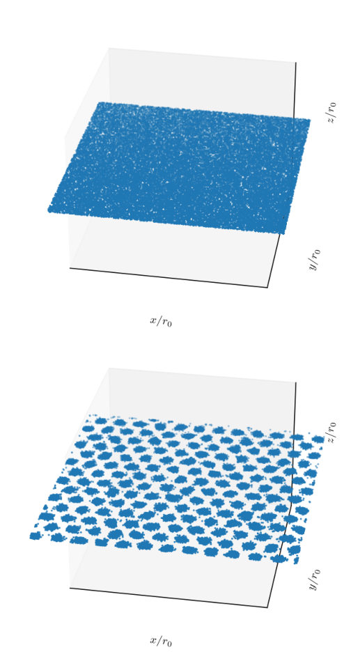
<figcaption class="paper-figure-caption"><b>Fig 1.</b> FIG. 1. Simulation snapshots of the liquid (top) and solid (bottom) phases in the antidipolar system. The strength of the repulsive core is set to C12/(E0r12 0 ) = 0.02073 (see Eq. 2) while the density in each case is nr2 0 = 0.17 (top) and nr2 0 = 2.5 (bottom).</figcaption>
</figure>
<figure class="paper-figure-card">
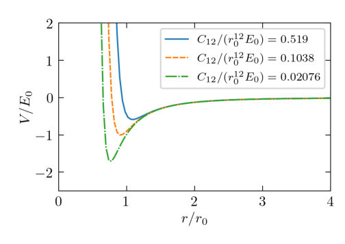
<figcaption class="paper-figure-caption"><b>Fig 2.</b> FIG. 2. Antidipolar potential (see Eq. 2) for different values of C12.</figcaption>
</figure>
<figure class="paper-figure-card">
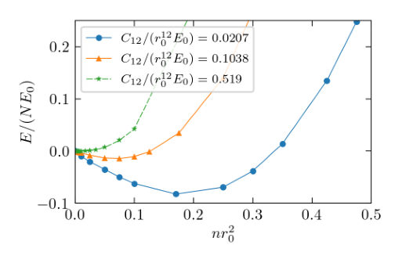
<figcaption class="paper-figure-caption"><b>Fig 3.</b> FIG. 3. Energy per particle as a function of the 2D density for the single layer, 2D antidipolar liquid for different values of the interaction parameter C12 (see Eq. 2).</figcaption>
</figure>
<figure class="paper-figure-card">
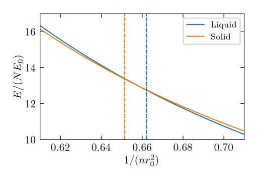
<figcaption class="paper-figure-caption"><b>Fig 4.</b> FIG. 4. Fits of the energy per particle of the solid and crystal phases (see Eqs. 14 15) as a function of the inverse 2D density 1/n for different values of C12/(E0r12 0 ) = 0.02076.</figcaption>
</figure>
<figure class="paper-figure-card">
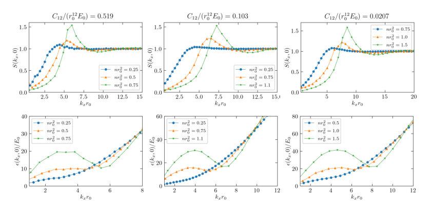
<figcaption class="paper-figure-caption"><b>Fig 5.</b> FIG. 5. Static structure factor (top) and excitation spectrum ε(kx, 0) (bottom) of the liquid phase for different densities and C12/(E0r12 0 ) = 0.519 (left), 0.103 (center), 0.0207 (right).</figcaption>
</figure>
</div>

<p><strong>Summary.</strong> This paper theoretically investigates quantum antidipolar systems in 2D, analyzing both single-layer and bilayer geometries. It calculates the equation of state and structural properties, finding that the system undergoes a first-order liquid-solid transition. Furthermore, it details how tuning the inter-layer separation allows one layer to significantly influence the superfluidity and energy of the other layer.</p>
<p><strong>Why it may be interesting.</strong> This work directly addresses the complex physics of dipolar quantum gases in reduced dimensions, which is a major frontier in AMO physics, particularly concerning phase transitions and interlayer coupling.</p>
<details>
<summary>Detailed structure</summary>
<p><strong>Main problem.</strong> The study investigates the properties of two-dimensional (2D) quantum systems interacting via antidipolar forces, examining single-layer and bilayer configurations.</p>
<p><strong>Main result.</strong> The system exhibits liquid-solid phase transitions at lower densities than expected for standard dipolar systems, and the bilayer structure shows tunable inter-layer coupling effects on superfluidity and energy.</p>
<p><strong>Method.</strong> The research employs advanced quantum many-body techniques, including Diffusion Monte Carlo (DMC) and the calculation of expectation values using Jastrow-Slater trial wave functions.</p>
<p><strong>Model / system.</strong> The model consists of particles with tunable antidipolar interactions, confined to 2D planes, potentially forming a bilayer structure. The Hamiltonian includes terms for intra-layer and inter-layer dipole-dipole interactions.</p>
<p><strong>Key observables.</strong> Equation of state (EOS), structural properties, liquid-solid transition points, superfluid fraction ($f_s$), and condensate fraction ($f_c$).</p>
<p><strong>Important parameters / regimes.</strong> Inter-layer distance ($h$), interaction strength ratio ($C_{12}/(E_0r_{12}^0)$), and particle density ($n$).</p>
<p><strong>Assumptions / limitations.</strong> The analysis relies on approximations like the Feynman approximation for excitation spectra and assumes the system can be described by specific Jastrow-type trial wave functions.</p>
<p><strong>Figures summary.</strong> Figures illustrate simulation snapshots of liquid and solid phases, the inter-particle potential, the energy per particle vs. density for the bilayer, and the superfluid/condensate fractions vs. inter-layer distance.</p>
<p><strong>Paper structure.</strong> The paper progresses by first establishing the single-layer liquid-solid transition, then extending the analysis to the bilayer geometry to study how tuning the inter-layer distance modifies the system's thermodynamic and superfluid properties.</p>
</details>
<details>
<summary>Abstract</summary>
<p>Particles with magnetic moment can be polarized, and rapidly rotated, employing a magnetic field such that the dipolar interaction among them changes sign, becoming antidipolar and thus isotropically attractive in a plane. Polar molecules can also be manipulated using microwave dressing fields to invert the sign of the dipole-dipole interaction. In this work, we study a two-dimensional system of antidipolar particles by calculating its equation of state and structural properties. The system behaves as a liquid even for scattering lengths significantly greater than the dipolar length. For large enough densities, the system transitions to a solid with one particle per lattice site via a first-order phase transition at a significantly smaller density than its dipolar counterpart. Moreover, motivated by the recent realization of a strongly axially trapped, bilayer geometry [Science 384, 546-551 (2024)], we study the properties of the bilayer liquid phase as the inter-layer distance is tuned, and provide the range of parameters where one layer can influence the properties of the other.</p>
</details>
<p><sub><a href="#top">↑ back to top</a></sub></p>

<p><a id="paper-2609.00825"></a></p>
<h3 id="quantum-based-optimization-of-gas-throughput-in-natural-gas-transmission-networks-under-hydraulic-constraints-using-qaoa"><a href="http://arxiv.org/abs/2609.00825v1">Quantum-Based Optimization of Gas Throughput in Natural Gas Transmission Networks Under Hydraulic Constraints Using QAOA</a></h3>
<p><strong>Authors:</strong> Alex Ben Ishay, Yuval Eyal, Yuval Cohen, Nati Erez<br>
<strong>Type:</strong> both · <strong>Category:</strong> quantum information and computing · <strong>PDF:</strong> <a href="https://arxiv.org/pdf/2609.00825v1">https://arxiv.org/pdf/2609.00825v1</a><br>
<strong>Analysis basis:</strong> full PDF text, analyzed in chunks
<strong>Topic relevance:</strong> <code>QC/QI experiment</code> <strong>3/5</strong></p>
<div class="figure-strip-hint">↔ Scroll figures horizontally</div>
<div class="paper-figures-scroll">
<figure class="paper-figure-card">
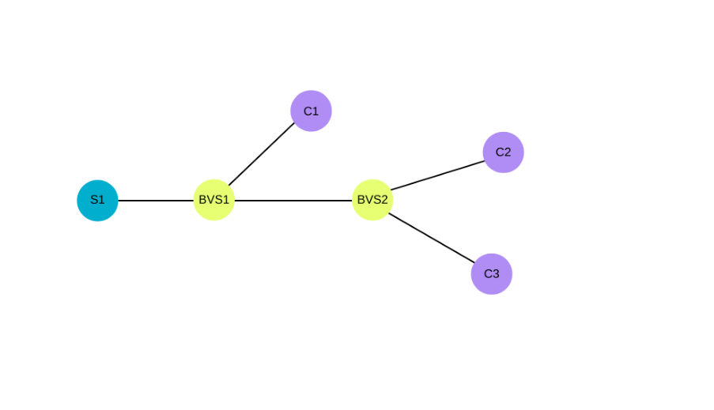
<figcaption class="paper-figure-caption"><b>Fig 1.</b> Figure 1: INGL demonstration network topology. Blue: supplier node (S1). Yellow: junction nodes (BVS1, BVS2). Purple: customer delivery nodes (C1, C2, C3).</figcaption>
</figure>
<figure class="paper-figure-card">
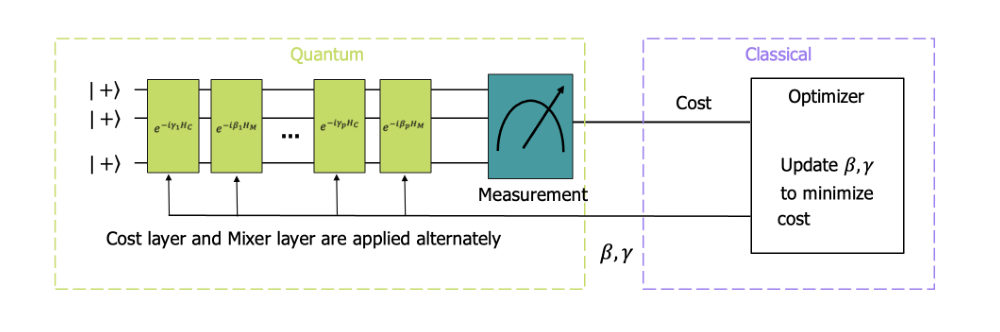
<figcaption class="paper-figure-caption"><b>Fig 2.</b> Figure 2: QAOA circuit. All qubits are initialized in the |+⟩state to create an equal superposition, followed by alter- nating QAOA cost and mixer layers and final measurement. A classical optimizer updates the parameters γ and β to minimize the cost function, corresponding in this case to maximizing the total throughput delivered to the customers.</figcaption>
</figure>
<figure class="paper-figure-card">
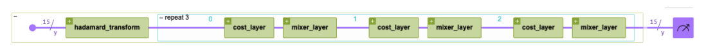
<figcaption class="paper-figure-caption"><b>Fig 3.</b> Figure 3: Quantum circuit for 15 logical qubits synthesized by the Classiq engine and taken from the Classiq visualization platform, consisting of an initial Hadamard transform that creates a uniform superposition, followed by three alternating cost and mixer layers as prescribed by the QAOA algorithm.</figcaption>
</figure>
</div>

<p><strong>Summary.</strong> This work applies the QAOA algorithm to optimize gas throughput in complex pipeline networks, transforming the continuous physical problem into a discrete QUBO format. The authors demonstrate the feasibility of this approach by running the circuit on a trapped-ion quantum processor, achieving near-optimal results with surprisingly shallow circuit depth. This establishes a tangible, end-to-end quantum-assisted optimization workflow for critical infrastructure.</p>
<p><strong>Why it may be interesting.</strong> It provides a concrete, real-world engineering optimization problem (gas flow) that is successfully mapped onto a quantum algorithm (QAOA) and tested on current hardware, serving as a proof-of-concept for quantum computation in industrial physics.</p>
<details>
<summary>Detailed structure</summary>
<p><strong>Main problem.</strong> The paper addresses the computationally hard problem of maximizing gas throughput in natural gas transmission networks subject to complex hydraulic and operational constraints.</p>
<p><strong>Main result.</strong> The QAOA approach successfully recovered near-optimal solutions on a trapped-ion quantum processor using only $p=2$ layers, demonstrating feasibility with significantly shallower circuits than simulated.</p>
<p><strong>Method.</strong> The problem is mapped to a QUBO formulation and solved using the Quantum Approximate Optimization Algorithm (QAOA), comparing simulator results ($p=30$) with direct hardware execution ($p=2$).</p>
<p><strong>Model / system.</strong> The physical system is a natural gas pipeline network modeled as a graph, governed by the Panhandle-B hydraulic equation. The optimization is framed by a cost Hamiltonian combining delivery objectives and physical constraint penalties.</p>
<p><strong>Key observables.</strong> Maximum gas throughput, physically valid nodal pressure assignments, and the probability distribution of candidate solutions.</p>
<p><strong>Important parameters / regimes.</strong> The number of QAOA layers ($p$), the pressure discretization step ($\Delta\pi$), and the physical parameters of the gas network (e.g., $P_s=70$ barg).</p>
<p><strong>Assumptions / limitations.</strong> The primary approximations involve discretizing continuous nodal pressures and approximating the non-linear Panhandle-B flow equation using a polynomial fit.</p>
<p><strong>Figures summary.</strong> The figures illustrate the QAOA circuit diagram and show the comparison between simulated and hardware-derived candidate solutions relative to the continuous classical optimum.</p>
<p><strong>Paper structure.</strong> The paper introduces the complex optimization problem, derives the QUBO/cost Hamiltonian, details the QAOA framework, presents simulator results, and concludes with an end-to-end demonstration on the IonQ Forte-1 quantum processor.</p>
</details>
<details>
<summary>Abstract</summary>
<p>Maximizing gas throughput in transmission networks under hydraulic and operational constraints is a combinatorial problem whose complexity grows exponentially with network size, making it computationally intensive to solve exactly. This paper addresses the graph-based optimization problem by optimizing nodal-pressure assignments under the Panhandle-B hydraulic equation. By framing the problem as a search over discretized nodal-pressure assignments coupled with a cost Hamiltonian that encodes both the delivery objective and physical-constraint penalties, we establish a unified formulation suitable for the Quantum Approximate Optimization Algorithm (QAOA). The mathematical model is adapted to a Quadratic Unconstrained Binary Optimization (QUBO) formulation and implemented using the Classiq quantum software platform. In simulator-based experiments, QAOA recovered the maximum-throughput valid operating point, consistent with classical exhaustive evaluation and classical hydraulic simulation reference solutions. A distinctive contribution of this work is the end-to-end execution of a reduced problem instance on the IonQ Forte-1 trapped-ion quantum processor. Remarkably, the hardware implementation used only $p=2$ QAOA layers, substantially fewer than the $p=30$ layers used in the simulator-based study. Despite this significant reduction in circuit depth, the QPU produced physically valid and interpretable candidate solutions that bracketed the continuous classical optimum, with each located within one pressure-discretization step of it. These results demonstrate that meaningful gas-network optimization behavior can be obtained using considerably shallower QAOA circuits than initially expected and provide an end-to-end proof of concept for near-term quantum-assisted gas-network optimization.</p>
</details>
<p><sub><a href="#top">↑ back to top</a></sub></p>

<p><a id="paper-2609.01145"></a></p>
<h3 id="direct-laser-written-optomechanical-double-membranes-in-an-optical-microcavity"><a href="http://arxiv.org/abs/2609.01145v1">Direct laser-written optomechanical double membranes in an optical microcavity</a></h3>
<p><strong>Authors:</strong> Lukas Tenbrake, Daniel Stachanow, Florian Giefer, Jana Blechmann, Wolfgang Alt, Sebastian Hofferberth, Hannes Pfeifer<br>
<strong>Type:</strong> both · <strong>Category:</strong> other · <strong>PDF:</strong> <a href="https://arxiv.org/pdf/2609.01145v1">https://arxiv.org/pdf/2609.01145v1</a><br>
<strong>Analysis basis:</strong> full PDF text, analyzed in chunks
<strong>Topic relevance:</strong> <code>analog quantum simulation</code> <strong>2/5</strong> · <code>driven-dissipative phase transition</code> <strong>2/5</strong> · <code>methods for driven-dissipative</code> <strong>2/5</strong> · <code>quantum optics experiment</code> <strong>2/5</strong> · <code>Tavis-Cummings &amp; cavity-many-emitter</code> <strong>1/5</strong> · <code>correlated / nonlocal dissipation</code> <strong>1/5</strong></p>
<div class="figure-strip-hint">↔ Scroll figures horizontally</div>
<div class="paper-figures-scroll">
<figure class="paper-figure-card">
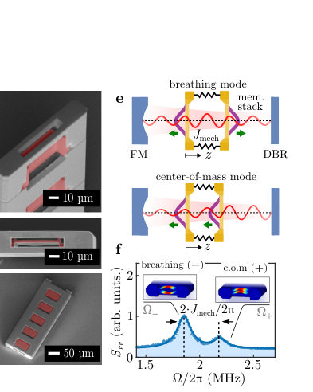
<figcaption class="paper-figure-caption"><b>Fig 1.</b> Fig. 1. System overview of the double-membrane stacks. (a) shows a schematic of the experimental structure. A vertical scaffold (sca) hosting mechanically coupled double-membrane structures (highlighted in red) is directly printed on a distributed Bragg reflector (DBR) substrate. The double membranes are printed orthogonally to the substrate. The top shows a cross-section of a double-membrane within the scaffold, highlighted by the green plane. Relevant geometry parameters are indicated. The fabrication procedure is split up into three steps: I.: Double membrane scaffold after printing and development. II.: Post-print flip-over of the structure onto the DBR by using a micromanipulator....</figcaption>
</figure>
<figure class="paper-figure-card">
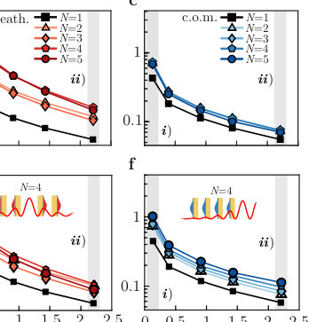
<figcaption class="paper-figure-caption"><b>Fig 2.</b> Fig. 5. Simulated scaling of collective vacuum optomechanical coupling with membrane number and geometry. The collective coupling strength 𝑔col is calculated for increasing membrane number 𝑁at fixed input wavelength 𝜆0 = 780 nm. The top row shows results for small membrane separation 𝑠mem = 0.20 µm, while the bottom row shows results for 𝑠mem = 4.10 µm. (a,d) Scaling of 𝑔col with membrane number 𝑁for two fixed membrane thicknesses: (i) 𝑡mem = 0.13 µm and (ii) 𝑡mem = 2.21 µm. For each thickness, the breathing mode is shown in red and the c.o.m. mode in blue. (b,e) Breathing-mode coupling 𝑔(−) col as a function of membrane thickness 𝑡mem for 𝑁= 1–5, with the membrane number indicated by the...</figcaption>
</figure>
<figure class="paper-figure-card">
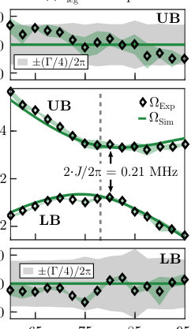
<figcaption class="paper-figure-caption"><b>Fig 3.</b> Fig. 9. Experimental results for the mechanically coupled double membrane frequen- cies compared to FEM simulations. (a) and (b) (middle) show the corresponding experimental data overlapped with simulation results for the two geometry cases depicted as filled and outlined stars in Fig. 2 (filled: [𝑡leg = 2.1 µm, 𝑠mem = 4.8 µm], outlined: [𝑡leg = 1.6 µm, 𝑠mem = 4.8 µm]). The modal frequency splitting is plotted against the connection leg angle 𝜃leg, displaying an avoided crossing, demonstrating the hybridization of the two mechanical membrane modes. The plots in the top and bottom row display the difference between experiment and simulation data for the frequency splitting from (a) and (b)...</figcaption>
</figure>
</div>

<p><strong>Summary.</strong> This paper reports on the creation of double-membrane resonators within an optical microcavity using 3D direct laser writing. By engineering mechanical mode hybridization, the researchers achieved enhanced collective optomechanical coupling, establishing a scalable platform for studying multimode cavity optomechanics. The combination of advanced nanofabrication and rigorous theoretical modeling makes this system highly relevant for quantum sensing and quantum light-matter interaction studies.</p>
<p><strong>Why it may be interesting.</strong> This work provides a highly tunable, scalable platform for cavity optomechanics by engineering mechanical coupling, which is crucial for studying collective dynamics and realizing complex quantum light-matter interactions beyond simple two-mode systems.</p>
<details>
<summary>Detailed structure</summary>
<p><strong>Main problem.</strong> The research aims to overcome the limitation of optomechanical systems being restricted to only two coupled membranes by establishing a scalable platform for multimode cavity optomechanics.</p>
<p><strong>Main result.</strong> The authors successfully demonstrated double-membrane resonators in a fiber-based microcavity using 3D direct laser writing, achieving enhanced collective optomechanical coupling strengths up to $g_{col}/2\pi \approx 0.1$ MHz.</p>
<p><strong>Method.</strong> The study combines experimental fabrication using 3D direct laser writing with theoretical modeling using finite-element methods (FEM) and transfer-matrix calculations to predict and analyze coupling strengths.</p>
<p><strong>Model / system.</strong> The system is a fiber-based Fabry-Perot microcavity containing monolithically integrated double-membrane resonators. The physics involves mechanical mode hybridization induced by physical coupling legs, leading to distinct center-of-mass and breathing normal modes.</p>
<p><strong>Key observables.</strong> Collective optomechanical coupling strengths ($g_{col}$), mechanical mode splitting ($J_{mech}$), and cavity finesse ($F$).</p>
<p><strong>Important parameters / regimes.</strong> Membrane thickness ($t_{mem}$), membrane-to-membrane spacing ($s_{mem}$), and the angle of the connecting support legs ($   heta_{leg}$).</p>
<p><strong>Assumptions / limitations.</strong> The analysis relies on the transfer-matrix formalism treating the system as a 1D multilayer cavity, and mechanical simulations required correcting the dynamic modulus by a scaling factor (0.88).</p>
<p><strong>Figures summary.</strong> Figures illustrate the system schematic, SEM images of the fabricated structure, mode diagrams showing hybridized modes, and cross-sectional cuts mapping the wavelength dependence of collective coupling strengths and cavity finesse.</p>
<p><strong>Paper structure.</strong> The paper progresses from demonstrating the fabrication of double-membrane resonators via DLW, to modeling the mechanical mode hybridization using FEM, and finally characterizing the enhanced collective optomechanical coupling and its wavelength dependence using transfer-matrix calculations.</p>
</details>
<details>
<summary>Abstract</summary>
<p>Optomechanical membrane-in-the-middle systems that comprise several coupled compliant membranes offer enhanced optomechanical coupling and collective dynamics. Recent realizations were fundamentally restricted to two membranes and to limited structural optimization of the involved membranes due to their intricate fabrication and experimental integration. Here, we present a fiber-based Fabry-Perot microcavity incorporating monolithically integrated double-membrane resonators fabricated by 3D direct laser writing. We realize controllable mechanical mode hybridization of membranes with coupling rates of up to $J_{\mathrm{mech}}/2π= 0.16$ MHz, exceeding the mechanical linewidths. We demonstrate enhanced collective optomechanical coupling of the membrane stack's breathing mode, reaching collective coupling strengths of up to $g_{\mathrm{col}}^{(-)}/2π\approx 0.1$ MHz. Our transfer-matrix calculations predict further substantial enhancements with realistic reductions of membrane thickness and spacing, and a larger number of membranes. Our results establish direct laser-written membrane arrays as a scalable platform for multimode cavity optomechanics, combining tunable mechanical interactions, enhanced collective optomechanical coupling, and scalability towards larger mechanically coupled resonator systems.</p>
</details>
<p><sub><a href="#top">↑ back to top</a></sub></p>

<p><a id="paper-2609.01492"></a></p>
<h3 id="accelerating-dynamic-simulations-of-photoexcited-materials-and-their-evolution-by-electron-informed-machine-learning"><a href="http://arxiv.org/abs/2609.01492v1">Accelerating dynamic simulations of photoexcited materials and their evolution by electron-informed machine learning</a></h3>
<p><strong>Authors:</strong> Yunzhe Jia, Fankai Xie, Yunfei Bai, Miao Liu, Cui Zhang, Sheng Meng<br>
<strong>Type:</strong> theory · <strong>Category:</strong> disordered systems and neural networks · <strong>PDF:</strong> <a href="https://arxiv.org/pdf/2609.01492v1">https://arxiv.org/pdf/2609.01492v1</a><br>
<strong>Analysis basis:</strong> full PDF text, analyzed in chunks
<strong>Topic relevance:</strong> <code>methods for driven-dissipative</code> <strong>2/5</strong> · <code>Keldysh / 2PI / non-Gaussian methods</code> <strong>1/5</strong> · <code>correlated / nonlocal dissipation</code> <strong>1/5</strong> · <code>driven-dissipative phase transition</code> <strong>1/5</strong> · <code>non-equilibrium universality</code> <strong>1/5</strong> · <code>quantum measurements</code> <strong>1/5</strong> · <code>scars &amp; prethermalization</code> <strong>1/5</strong></p>
<div class="figure-strip-hint">↔ Scroll figures horizontally</div>
<div class="paper-figures-scroll">
<figure class="paper-figure-card">
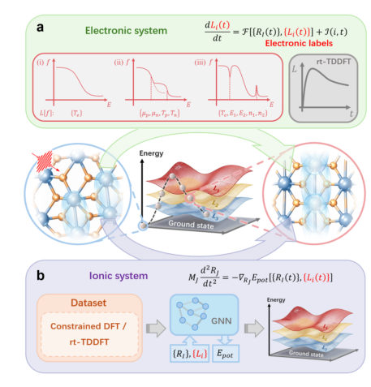
<figcaption class="paper-figure-caption"><b>Fig 1.</b> Figure 1. Schematic diagram of the workflow of excited state machine learning molecular dynamics (EMLMD). Schematic diagram of an excited-state dynamic process. The illustration shows initial state and an instan- taneous state connected by evolution of both electronic and ionic system. a–b The evolution equations and the different scenarios that they might describe for the electronic (a) and ionic (b) subsystems, respectively. {RI} and {Li} represent atomic coordinates and labels of electronic structure respec- tively. DFT methods are used to generate training data, while rt-TDDFT trajectories provide the evolution of {Li}. Machine learning potential is trained based on self-developed graph...</figcaption>
</figure>
<figure class="paper-figure-card">
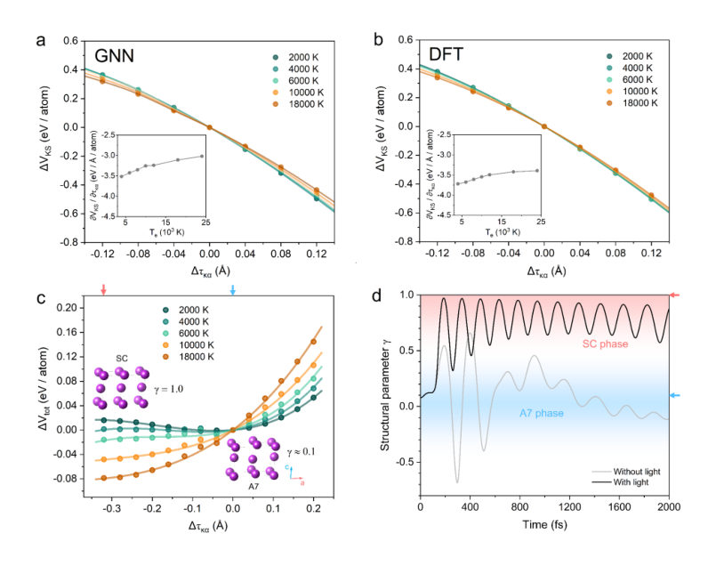
<figcaption class="paper-figure-caption"><b>Fig 2.</b> Figure 2. Machine learning of electron-temperature-dependent excited-state potential energy surfaces. a–b KS orbital energy variations calculated by the graph neural network (GNN) and DFT, respectively, along the A1g phonon displacement coordinate. Insets show the zero-point (∆τκα = 0) derivative evolution as a function of Te. c GNN-predicted total energy profile along the A1g phonon displacement coordinate, with schematic illustrations of A7 and SC lattice structures. d Time evolution of structural order parameter γ under unexcited and laser-excited conditions. Black and gray lines represent dynamic trajectories with and without light irradiation, respectively. Red and blue backgrounds...</figcaption>
</figure>
<figure class="paper-figure-card">
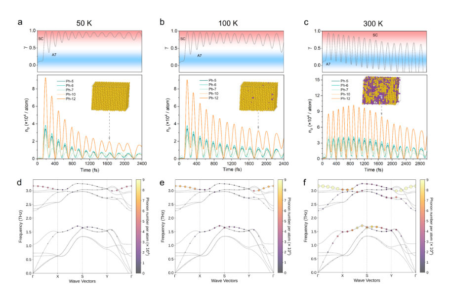
<figcaption class="paper-figure-caption"><b>Fig 3.</b> Figure 3. Environment-temperature-dependent phonon dynamics of photoexcited bismuth. a–c Time evolution of structural order parameter γ (upper panel) and average number of phonons nσ for certain phonon branches (lower panel) at bath temperatures of 50 K, 100 K and 300 K under laser excitation. Red and blue backgrounds delineate SC and A7 phase domains. The A1g mode corresponds to Γ-point Ph-12. d–f q-resolved phonon occupation distributions per atom at representative time points (t ∼1700 fs) near peak phonon density for 50 K, 100 K and 300 K trajectories, with corresponding structural snapshots embedded as insets in (a–c). Circle size and colour encode phonon occupation magnitude.</figcaption>
</figure>
<figure class="paper-figure-card">
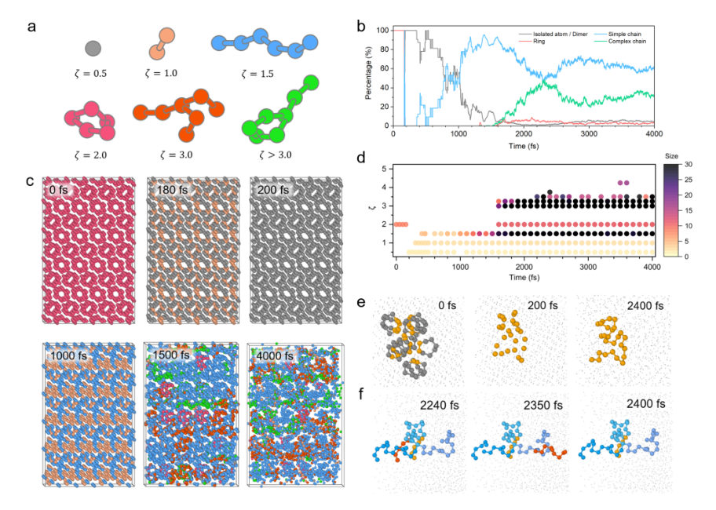
<figcaption class="paper-figure-caption"><b>Fig 4.</b> Figure 4. Photo-induced amorphization dynamics of selenium. a Schematic illustration of typical clusters type, with cluster order parameter ζ values labeled for each structural motif. b Time evolution of population percentage of distinct cluster species. Grey, blue, red and green lines correspond to isolated atoms/dimers, simple unbranched chains, ring structures and complex branched chains, respectively. c Representative structural snapshots of system at 0 fs, 180 fs, 200 fs, 1000 fs, 2000 fs and 4000 fs, colored according to the cluster classification criteria in (a). d Time evolution of cluster types ζ and sizes throughout the photoinduced amorphization process. Color of each data point...</figcaption>
</figure>
</div>

<p><strong>Summary.</strong> This paper introduces an Electron-informed Machine Learning Molecular Dynamics (EMLMD) framework to overcome the computational barriers in simulating light-induced dynamics. By training ML potentials on high-fidelity rt-TDDFT data, the method accurately captures excited-state electron-phonon coupling. This allows researchers to study complex phenomena like photoinduced phase transitions over extended timescales with first-principles accuracy.</p>
<p><strong>Why it may be interesting.</strong> The integration of electronic structure information (like $T_e$) directly into the force field via ML is highly relevant for open quantum systems, as it allows the simulation of non-equilibrium energy flow and coupling mechanisms beyond simple thermal assumptions.</p>
<details>
<summary>Detailed structure</summary>
<p><strong>Main problem.</strong> Direct first-principles simulation of nonadiabatic coupled electron-nuclear dynamics following electronic excitation is computationally prohibitive for studying photoinduced phenomena in materials.</p>
<p><strong>Main result.</strong> The developed EMLMD framework successfully simulates large-scale, long-time dynamics, revealing that the photoinduced structural transition in bismuth is driven by electronic modulation rather than just lattice heating.</p>
<p><strong>Method.</strong> The authors propose an Electron-informed Machine Learning Molecular Dynamics (EMLMD) framework, which trains a machine learning potential using high-precision rt-TDDFT data to accurately capture excited-state potential energy surfaces.</p>
<p><strong>Model / system.</strong> The study focuses on photoexcited materials, demonstrated with Bismuth undergoing a structural phase transition and Selenium undergoing photoamorphization. The model involves coupling electronic structure information (like electron temperature) into the ML potential governing atomic motion.</p>
<p><strong>Key observables.</strong> Structural order parameter ($\gamma$), electron temperature ($T_e$), lattice temperature ($T_{bath}$), time- and momentum-resolved phonon dynamics.</p>
<p><strong>Important parameters / regimes.</strong> Excitation energy ($\hbar\omega = 1.55$ eV), environment temperatures (50 K, 100 K, 300 K), simulation timescales (picoseconds to nanoseconds).</p>
<p><strong>Assumptions / limitations.</strong> The method relies on physically informed dimensionality reduction to approximate the full electron distribution and uses the frozen-phonon approximation for calculating potential derivatives.</p>
<p><strong>Figures summary.</strong> Figures illustrate the EMLMD workflow using DFT/rt-TDDFT training data, show the time evolution of the structural order parameter ($\gamma$) under different excitation conditions, and map out environment-temperature-dependent phonon dynamics.</p>
<p><strong>Paper structure.</strong> The paper first establishes the computational bottleneck of nonadiabatic dynamics. It then details the EMLMD framework, contrasting it with TTM and TDBE. The core of the work presents large-scale simulations on Bismuth and Selenium, demonstrating the method's capability to resolve complex, coupled dynamics.</p>
</details>
<details>
<summary>Abstract</summary>
<p>Nonadiabatic coupled electron-nuclear dynamics upon electronic excitation underpin the microscopic mechanism and rational modulation of diverse photoinduced functional phenomena in materials, yet their direct first-principles simulations remain computationally demanding. Here we develop a framework for nonadiabatic excited-state machine-learning molecular dynamics (EMLMD) simulations, where the nonequilibrium electronic information upon photoexcitation such as electron temperature is rigorously calibrated from high-precision real-time time-dependent density functional theory (rt-TDDFT) benchmark simulations, enabling accurate reconstruction of excited-state potential energy surfaces (PES). This framework natively incorporates the excited-state electron-phonon couplings and intrinsically captures photoinduced phonon anharmonicity, both of which are missing in standard machine learning molecular dynamics, thus delivering first-principles-level accuracy for excited-state atomic evolutions. Large-scale EMLMD simulations resolve time- and momentum-resolved phonon dynamics in photoexcited materials, directly uncovering the competition between photogenerated coherent phonons and thermal phonons during photoinduced phase transition of bismuth. It also simultaneously resolves elusive atomic-scale microscopic dynamics and global structural rearrangement for selenium photoamorphization. Balancing high accuracy and efficiency, EMLMD offers a versatile paradigm to tackle key challenges in the study of complex excited-state molecular dynamics.</p>
</details>
<p><sub><a href="#top">↑ back to top</a></sub></p>

<p><a id="paper-2609.01329"></a></p>
<h3 id="pole-zero-geometry-model-reduction-and-identifiability-in-sensory-adaptation"><a href="http://arxiv.org/abs/2609.01329v1">Pole-Zero Geometry, Model Reduction, and Identifiability in Sensory Adaptation</a></h3>
<p><strong>Authors:</strong> Gunn Kim<br>
<strong>Type:</strong> theory · <strong>Category:</strong> statistical mechanics · <strong>PDF:</strong> <a href="https://arxiv.org/pdf/2609.01329v1">https://arxiv.org/pdf/2609.01329v1</a><br>
<strong>Analysis basis:</strong> full PDF text, analyzed in chunks
<strong>Topic relevance:</strong> <code>quantum measurements</code> <strong>2/5</strong> · <code>Keldysh / 2PI / non-Gaussian methods</code> <strong>1/5</strong> · <code>correlated / nonlocal dissipation</code> <strong>1/5</strong> · <code>driven-dissipative phase transition</code> <strong>1/5</strong> · <code>methods for driven-dissipative</code> <strong>1/5</strong> · <code>non-equilibrium universality</code> <strong>1/5</strong></p>
<div class="figure-strip-hint">↔ Scroll figures horizontally</div>
<div class="paper-figures-scroll">
<figure class="paper-figure-card">

<figcaption class="paper-figure-caption"><b>Fig 1.</b> FIG. 2. Frequency response on the exact-integrator slice. With Ω= ω√τxτm, all minimal-model curves peak at Ω= 1. Parallel subtraction suppresses the common dc component, while finite branch kinetics suppress sufficiently fast mod- ulation; the surviving intermediate band is therefore the frequency-domain counterpart of temporal comparison. The minimal two-state model has ωp = (τxτm)−1/2 and ∆ω = 1/τx. A common upstream stage, as in Eq. (17), adds a fur- ther high-frequency pole and breaks the exact log-frequency inversion symmetry.</figcaption>
</figure>
<figure class="paper-figure-card">

<figcaption class="paper-figure-caption"><b>Fig 2.</b> FIG. 1. Normalized response to a persistent step on the exact- integrator slice κ = 0 for several values of ρ = τm/τx. Time is measured in units t0 = √τxτm and the output in units of gs0. In the parallel-subtraction interpretation, a persistent in- put excites two temporal branches whose transient mismatch produces the pulse while equal dc gains cancel at long times. The poles control the transient morphology: complex reduced modes occur for ρ &lt; 4, the poles coalesce at ρ = 4, and two real modes occur for ρ &gt; 4.</figcaption>
</figure>
<figure class="paper-figure-card">
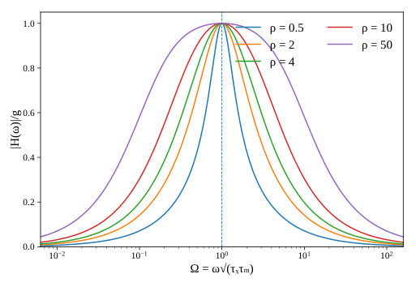
<figcaption class="paper-figure-caption"><b>Fig 3.</b> Figure 2 is therefore also a subtraction diagram in fre- quency space: sufficiently slow components are rejected because the two branches agree, sufficiently rapid compo- nents are suppressed by finite kinetics, and intermediate frequencies are transmitted because the branches have different phase and amplitude.</figcaption>
</figure>
<figure class="paper-figure-card">
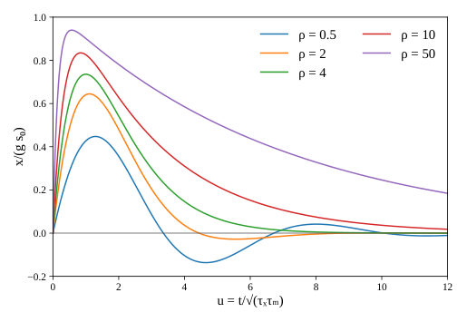
<figcaption class="paper-figure-caption"><b>Fig 4.</b> Figure 1 shows the normalized step response of the minimal exact-integrator slice. In the parallel picture, the pulse is the temporary mismatch between fast and slow branches after both receive the same persistent in- put. They are equal at long times, so the output returns to baseline. The pole locations determine whether that mismatch relaxes through an effective complex pair or through distinct real decays.</figcaption>
</figure>
<figure class="paper-figure-card">
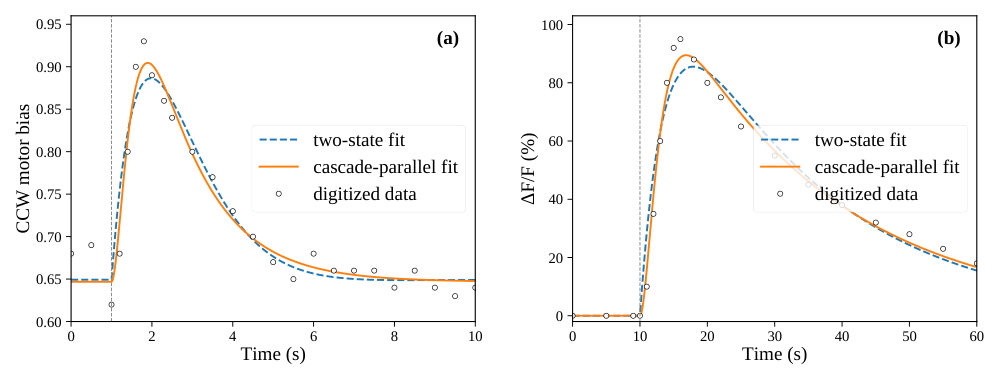
<figcaption class="paper-figure-caption"><b>Fig 5.</b> FIG. 3. Graph-digitized biological responses compared with two coarse-grained realizations. (a) Wild-type E. coli tethered-cell CCW motor bias from Segall, Block, and Berg [4]. The dashed two-state fit has τx = 0.529 s, τm = 1.666 s, ρ = 3.148, and R2 = 0.928; the solid balanced cascade–parallel fit has T = 0.268 s, Ts = 1.364 s, and R2 = 0.958. (b) Corrected AWCON</figcaption>
</figure>
</div>

<p><strong>Summary.</strong> This paper provides a rigorous framework for analyzing the limitations of low-dimensional models applied to adaptive biological dynamics. It demonstrates that model reduction techniques can lead to qualitatively different inferred system structures, and that certain thermodynamic quantities, like irreversibility, cannot be determined solely from the measured scalar response. The work establishes a clear boundary between model-dependent artifacts and fundamental physical invariants.</p>
<p><strong>Why it may be interesting.</strong> The rigorous mathematical framework developed for distinguishing between true system invariants and artifacts of model reduction is highly relevant for any field using low-dimensional approximations (like effective Hamiltonians or coarse-grained descriptions) of complex, high-dimensional physical systems.</p>
<details>
<summary>Detailed structure</summary>
<p><strong>Main problem.</strong> The paper addresses ambiguities in low-dimensional modeling of adaptive biological dynamics, specifically determining which inferred dynamics are truly determined by measurements versus those introduced by model reduction or partial observation.</p>
<p><strong>Main result.</strong> The pole classification of a reduced model is not invariant under changes in the observation protocol (e.g., moment matching vs. window fitting). Furthermore, the scalar response spectrum cannot identify the path-space irreversibility rate in the exact-adaptation limit.</p>
<p><strong>Method.</strong> The authors use pole-zero geometry analysis, stochastic Ornstein-Uhlenbeck theory, and systematic model reduction techniques to analyze the relationship between high-order systems and their low-dimensional approximations.</p>
<p><strong>Model / system.</strong> The core system is sensory adaptation, modeled using a two-state system involving sensory output, a memory variable, and the stimulus, often analyzed via transfer functions derived from Ornstein-Uhlenbeck processes.</p>
<p><strong>Key observables.</strong> Pole locations (real vs. complex), relative degree, cross-diffusion terms in the spectrum, and the path-space irreversibility rate.</p>
<p><strong>Important parameters / regimes.</strong> The ratio of time constants, $
ho =    au_m /  au_x$, and the memory parameter $\kappa$.</p>
<p><strong>Assumptions / limitations.</strong> The analysis relies on comparing results from different model reduction procedures (e.g., low-frequency moment matching vs. finite-window fitting) and assuming the applicability of specific reduced OU models for deriving bounds.</p>
<p><strong>Figures summary.</strong> Figures illustrate the dependence of pole classification on the reduction method, the frequency response of the system, and the separation between the deterministic response and the hidden cross-diffusion channel.</p>
<p><strong>Paper structure.</strong> The paper progresses by first demonstrating the non-invariance of pole classification under model reduction, then connecting stochastic identifiability to adaptation by analyzing how cross-diffusion terms drop out of the scalar spectrum under specific memory limits, and finally establishing bounds on irreversibility.</p>
</details>
<details>
<summary>Abstract</summary>
<p>Sensory adaptation provides a concrete setting in which low-order system identification can fail qualitatively. We show that one fixed higher-order adaptive system composed entirely of real first-order relaxation modes can be reduced to opposite sides of the second-order pole boundary: low-frequency moment matching gives $ρ_{\rm moment}=4.50$, whereas finite-window fitting gives $ρ_{\rm window}=3.31$, and the inferred pole class changes further with sampling protocol. Thus the real-versus-complex classification of a reduced model is not itself reduction invariant. We then use the general two-state spectrum to connect stochastic identifiability to adaptation: for nontrivial coupling and one-state observation, cross diffusion drops out of the scalar spectrum when the hidden state has no self-relaxation. In the adaptive model, this condition is precisely the integral-memory limit that produces exact adaptation, while leaky memory restores spectral sensitivity. For the exact-adaptation model, the Gaussian path-space irreversibility nevertheless depends on the hidden cross-diffusion channel. Hence $\{H,S_x\}$ does not determine the irreversibility rate. Independently, for a specified all-even reduced two-state drift with $ρ<4$, the drift-only lower bound is $σ\ge τ_x^{-1}(4/ρ-1)$. Published \textit{E.~coli} and \textit{C.~elegans} responses provide biological examples of these limits. The distinction established here between transfer-function invariants, reduction-dependent properties, and hidden-state quantities provides a concrete framework for evaluating the limitations of low-dimensional models of adaptive biological dynamics.</p>
</details>
<p><sub><a href="#top">↑ back to top</a></sub></p>

<p><a id="paper-2609.01127"></a></p>
<h3 id="nonmonotonic-control-of-pattern-formation-by-chemotaxis"><a href="http://arxiv.org/abs/2609.01127v1">Nonmonotonic control of pattern formation by chemotaxis</a></h3>
<p><strong>Authors:</strong> Mintu Karmakar, Abhik Basu<br>
<strong>Type:</strong> theory · <strong>Category:</strong> statistical mechanics · <strong>PDF:</strong> <a href="https://arxiv.org/pdf/2609.01127v1">https://arxiv.org/pdf/2609.01127v1</a><br>
<strong>Analysis basis:</strong> full PDF text, analyzed in chunks
<strong>Topic relevance:</strong> <code>driven-dissipative phase transition</code> <strong>2/5</strong> · <code>Frenkel-Kontorova</code> <strong>1/5</strong> · <code>analog quantum simulation</code> <strong>1/5</strong> · <code>non-equilibrium universality</code> <strong>1/5</strong></p>
<div class="figure-strip-hint">↔ Scroll figures horizontally</div>
<div class="paper-figures-scroll">
<figure class="paper-figure-card">

<figcaption class="paper-figure-caption"><b>Fig 1.</b> FIG. 1. Instabilities and patterns for 𝜉1 = 𝜉= 𝜉2 &lt; 0. (a) 𝑘2 𝑐as a function of 𝜉&lt; 0, showing a nonmonotonic behavior. (b) and (c) Snapshots showing steady patterns for 𝐷= 1000 and 𝐷1 = 0.01(b), 0.1(c), showing nonmonotonic variation of the pattern intensities as 𝜉varies. (d) and (e) Plots of Σ𝜙and Σ𝜓versus 𝜉corresponding to the snapshots in (b) and (c) respectively. See text.</figcaption>
</figure>
<figure class="paper-figure-card">

<figcaption class="paper-figure-caption"><b>Fig 2.</b> FIG. 2. Instabilities and patterns for 𝜉1 = 𝜉= 𝜉2 &gt; 0. (a) 𝑘2 𝑐as a function of 𝜉&lt; 0, showing a monotonic behavior. (b) and (c) Snapshots showing steady patterns for 𝐷= 1000 and 𝐷1 = 0.01(b), 0.1(c), showing monotonic variation of the pattern intensities as 𝜉varies. (d) and (e) Plots of Σ𝜙and Σ𝜓versus 𝜉corresponding to the snapshots in (b) and (c) respectively. See text.</figcaption>
</figure>
<figure class="paper-figure-card">

<figcaption class="paper-figure-caption"><b>Fig 3.</b> FIG. 3. Instabilities and patterns for 𝜉1 = 𝜉= −𝜉2 &gt; 0.(a) 𝑘2 𝑐as a function of 𝜉&gt; 0, showing a nonmonotonic behavior. (b) and (c) Snapshots showing steady patterns for 𝐷= 1000 and 𝐷1 = 0.01(b), 0.1(c), showing nonmonotonic variation of the pattern intensities as 𝜉varies. (d) and (e) Plots of Σ𝜙and Σ𝜓versus 𝜉corresponding to the snapshots in (b) and (c) respectively. See text.</figcaption>
</figure>
<figure class="paper-figure-card">

<figcaption class="paper-figure-caption"><b>Fig 4.</b> FIG. 4. Instabilities and patterns for 𝜉1 = 𝜉= −𝜉2 &lt; 0.(a) 𝑘2 𝑐as a function of 𝜉&lt; 0, showing a monotonic behavior. (b) and (c) Snapshots showing steady patterns for 𝐷= 1000 and 𝐷1 = 0.01(b), 0.1(c), showing monotonic variation of the pattern intensities as 𝜉varies. (d) and (e) Plots of Σ𝜙and Σ𝜓versus 𝜉corresponding to the snapshots in (b) and (c) respectively. See text.</figcaption>
</figure>
</div>

<p><strong>Summary.</strong> This paper analyzes pattern formation in reaction-diffusion systems coupled with chemotaxis. The authors demonstrate that the strength of chemotaxis can lead to nonmonotonic behavior, causing re-entrant transitions between patterned and uniform states. They use linear stability analysis and numerical simulations to map out these complex control regimes and morphological transitions.</p>
<p><strong>Why it may be interesting.</strong> While focused on classical pattern formation, the concept of nonmonotonic control and re-entrant transitions driven by an external coupling (chemotaxis) is relevant to understanding phase transitions in complex quantum or open quantum systems.</p>
<details>
<summary>Detailed structure</summary>
<p><strong>Main problem.</strong> The study investigates how pattern formation in two-species reaction-diffusion systems is controlled by the strength of chemotaxis, specifically looking for nonmonotonic dependencies.</p>
<p><strong>Main result.</strong> Chemotaxis can induce a striking nonmonotonic and re-entrant dependence of pattern formation on its strength, and it can also drive morphological transitions between spot and stripe patterns.</p>
<p><strong>Method.</strong> The analysis employs linear stability analysis (LSA) around uniform states to determine the selected wavevector ($k_c$), supplemented by direct numerical simulations (DNS) using pseudo-spectral methods.</p>
<p><strong>Model / system.</strong> The model is a generic two-species reaction-diffusion system incorporating mutual chemotaxis, exemplified by the chemotactic extension of the Selkov model for glycolysis in two dimensions.</p>
<p><strong>Key observables.</strong> Pattern selection wavevector ($k_c$), pattern amplitudes ($\Delta\phi, \Delta\psi$), and the dependence of these on chemotaxis couplings ($\xi_1, \xi_2$).</p>
<p><strong>Important parameters / regimes.</strong> Chemotaxis couplings ($\xi_1, \xi_2$), the strength of chemotaxis ($\xi$), and the system size ($L$).</p>
<p><strong>Assumptions / limitations.</strong> The analysis relies on linear stability theory and approximations for determining $k_c$; DNS studies are performed for specific parameter sets.</p>
<p><strong>Figures summary.</strong> Figures illustrate the nonmonotonic dependence of $k_c$ on $\xi$ for different chemotaxis regimes (reciprocal vs. nonreciprocal), and show corresponding variations in pattern amplitudes ($\Sigma\phi, \Sigma\psi$) across various $\xi$ values.</p>
<p><strong>Paper structure.</strong> The paper progresses by setting up the reaction-diffusion system, performing LSA to find $k_c$'s dependence on chemotaxis strength, and then confirming these theoretical predictions and observing pattern transitions (spot/stripe) via DNS.</p>
</details>
<details>
<summary>Abstract</summary>
<p>We investigate pattern formation in generic two-species reaction--diffusion systems with chemotaxis. We show that chemotaxis can give rise to a striking nonmonotonic dependence of pattern formation on its strength, opening the possibility of re-entrant transitions between patterned and homogeneous states controlled by chemotaxis. In certain regimes, chemotaxis also induces additional heretofore unexplored instabilities. Furthermore, varying the strength of chemotaxis can drive morphological transitions between spot and stripe patterns.</p>
</details>
<p><sub><a href="#top">↑ back to top</a></sub></p>

<p><a id="paper-2609.01019"></a></p>
<h3 id="photonic-fusion-operations-transform-partial-distinguishability"><a href="http://arxiv.org/abs/2609.01019v1">Photonic fusion operations transform partial distinguishability</a></h3>
<p><strong>Authors:</strong> S. N. van den Hoven, G. B. Lamers, J. J. Renema<br>
<strong>Type:</strong> theory · <strong>Category:</strong> quantum information and computing · <strong>PDF:</strong> <a href="https://arxiv.org/pdf/2609.01019v1">https://arxiv.org/pdf/2609.01019v1</a><br>
<strong>Analysis basis:</strong> full PDF text, analyzed in chunks
<strong>Topic relevance:</strong> <code>quantum measurements</code> <strong>2/5</strong> · <code>analog quantum simulation</code> <strong>1/5</strong></p>
<div class="figure-strip-hint">↔ Scroll figures horizontally</div>
<div class="paper-figures-scroll">
<figure class="paper-figure-card">

<figcaption class="paper-figure-caption"><b>Fig 1.</b> Figure 1. Loglog plot of the infidelity of a Bell state after fus- ing two Bell states together with various fusion protocols. The output infidelity is plot as a function of the input infidelity of the Bell states. The intersections with the y-axis show the in- crease in infidelity in the low error regime for various families of heralding patterns. The families of the different heralding patterns for the fusion protocols without ancillary states, with a |Φ+⟩ancilla state and with a |Ψ+⟩ancilla state are shown as solid lines with an orange hue, dashed lines with a green hue and a blue dotted line respectively. The different shades of the different lines correspond to the probability of...</figcaption>
</figure>
<figure class="paper-figure-card">

<figcaption class="paper-figure-caption"><b>Fig 2.</b> Figure 2. Both the success probability (top) and the expectation value of the error reduction factor (bottom) are shown for var- ious fusion protocols. On the left of the bottom histogram we see that existing protocols for fusions (up to 6-photon ancillary states) all show error reduction factors below one and hence perform anti-distillation on average, while the altered Grice protocols on the right excel in terms of distillation properties. This comes at the expense of reducing the success probability.</figcaption>
</figure>
<figure class="paper-figure-card">

<figcaption class="paper-figure-caption"><b>Fig 3.</b> Figure 3. For various fusion protocols, the cumulative success probability is shown as a function of a desired minimum error reduction factor. The curves therefore indicate the probability of obtaining a successful herald outcome conditioned on de- manding at least a specified degree of indistinguishability dis- tillation.</figcaption>
</figure>
<figure class="paper-figure-card">

<figcaption class="paper-figure-caption"><b>Fig 4.</b> Figure 4. Comparison of the average error reduction factor for the collective distinguishability model (orange) and Bell states generated from OBB single photons (green).</figcaption>
</figure>
<figure class="paper-figure-card">

<figcaption class="paper-figure-caption"><b>Fig 5.</b> Figure 5. Average fidelity of a 4-GHZ state as a function of the number of successful fusion operations for the various fusion protocols considered. All states (including ancilla states) are generated from OBB single photons. For most data points, the error bars are smaller than the markers. For this figure an input error of ϵOBB = 0.0025 is used, which follows the reported value of Ref. [3].</figcaption>
</figure>
</div>

<p><strong>Summary.</strong> This work establishes that photonic fusion operations not only determine success rates but also dynamically shape the partial distinguishability of the resulting quantum state. By analyzing this transformation, the authors show that protocols optimized for fidelity or success might fail to account for detrimental changes in distinguishability. This mandates that distinguishability propagation be a core metric in designing robust photonic quantum circuits.</p>
<p><strong>Why it may be interesting.</strong> It provides a rigorous, quantitative framework for assessing the quality of quantum operations in photonic systems by tracking the evolution of coherence/indistinguishability, which is crucial for scaling up quantum networks.</p>
<details>
<summary>Detailed structure</summary>
<p><strong>Main problem.</strong> The paper investigates a novel characterization of photonic fusion operations: how they dynamically transform partial distinguishability, moving beyond simple metrics like success probability or resource cost.</p>
<p><strong>Main result.</strong> Different fusion protocols induce markedly different transformations in partial distinguishability, meaning this property must be considered alongside success probability when evaluating quantum protocols.</p>
<p><strong>Method.</strong> The authors analyze various fusion protocols using theoretical models (OBB/OBBell) to track the evolution of distinguishability in heralded entangled states.</p>
<p><strong>Model / system.</strong> The system is photonic quantum information processing, focusing on photonic fusion operations (Bell measurements) applied to states suffering from partial distinguishability due to imperfect photon sources or channels.</p>
<p><strong>Key observables.</strong> Partial distinguishability, fidelity of the remaining state, average error reduction factor, and success probability.</p>
<p><strong>Important parameters / regimes.</strong> The distinguishability parameter ($\epsilon$), the fusion protocol used, and the heralding outcome.</p>
<p><strong>Assumptions / limitations.</strong> The analysis utilizes the Orthogonal Bad Bit (OBB) and Orthogonal Bad Bell (OBBell) models, which simplify the continuous nature of realistic mode mismatch.</p>
<p><strong>Figures summary.</strong> Figures compare Bell-state infidelity ($\epsilon'$) vs. distinguishability ($\epsilon$) for various protocols, and compare success probability with error reduction factors for modified protocols.</p>
<p><strong>Paper structure.</strong> The paper introduces the problem of characterizing fusion operations beyond success probability, develops error models (OBB/OBBell), analyzes multiple protocols by tracking distinguishability transformation, and concludes that this dynamic property must be accounted for.</p>
</details>
<details>
<summary>Abstract</summary>
<p>Photonic fusion operations are a central primitive in photonic quantum information processing and are commonly characterized by their success probability and resource cost. Here, we identify an additional way in which different implementations of fusion operations differ, namely in how they transform partial distinguishability. We consider distinguishability originating both from imperfect entangled resource states and from imperfect single photons. We find that different successful fusion events can induce markedly different distinguishability transformations depending on the fusion protocol, heralding outcome, and error model. Under a collective resource-state error model, we identify a modification to an existing fusion protocol that improves the fidelity of the remaining state on average. Generally, however, these transformations adversely affect distinguishability, and many successful fusion outcomes are accompanied by distinguishability degradation. Our results show that partial distinguishability is dynamically shaped by interference and measurements and should be considered alongside overall fusion success probability when evaluating photonic fusion protocols.</p>
</details>
<p><sub><a href="#top">↑ back to top</a></sub></p>

<p><a id="paper-2609.00148"></a></p>
<h3 id="regulating-free-scalar-and-yang-lee-5d-cfts-on-the-fuzzy-four-sphere"><a href="http://arxiv.org/abs/2609.00148v1">Regulating Free-scalar and Yang--Lee 5d CFTs on the Fuzzy Four Sphere</a></h3>
<p><strong>Authors:</strong> Jiangyuan Qian<br>
<strong>Type:</strong> theory · <strong>Category:</strong> statistical mechanics · <strong>PDF:</strong> <a href="https://arxiv.org/pdf/2609.00148v1">https://arxiv.org/pdf/2609.00148v1</a><br>
<strong>Analysis basis:</strong> full PDF text, analyzed in chunks
<strong>Topic relevance:</strong> <code>methods for driven-dissipative</code> <strong>2/5</strong> · <code>analog quantum simulation</code> <strong>1/5</strong></p>
<div class="figure-strip-hint">↔ Scroll figures horizontally</div>
<div class="paper-figures-scroll">
<figure class="paper-figure-card">

<figcaption class="paper-figure-caption"><b>Fig 1.</b> Figure 1. The fuzzy S4 orbital decompose into S3 orbitals.</figcaption>
</figure>
<figure class="paper-figure-card">

<figcaption class="paper-figure-caption"><b>Fig 2.</b> Figure 2. (a) ⟨Mz 2⟩as a function of hx, for V1,0 = 1.600, V0,1 = 0.011. (b) Energy gaps in different (C2, R, +1) sectors as a function of hx, with same parameter choice.</figcaption>
</figure>
<figure class="paper-figure-card">

<figcaption class="paper-figure-caption"><b>Fig 3.</b> Figure 3. (a) The Ising cost QIS as a function of hx, for V1,0 = 1.600, V0,1 = 0.011. (b) The spec- trum of P = +1 symmetric tensor representations of so(5), having removed the weight degeneracy in an irreducible representation. (c) The full spectrum. (b–c) are computed at I = 2, with the parameters in (3.5).</figcaption>
</figure>
<figure class="paper-figure-card">

<figcaption class="paper-figure-caption"><b>Fig 4.</b> Figure 4. Phase diagram of the Yang–Lee models, adapted from Cruz et al.</figcaption>
</figure>
<figure class="paper-figure-card">

<figcaption class="paper-figure-caption"><b>Fig 5.</b> Figure 5. (a) The energy levels ReEn(hz) of (4.2). (b) The color denotes the imaginary part of the energies as function of hz, the merging point is h(merg.) z ≃1.7, the vertical line denotes the critical point h∗ z &lt; h(merg.) z , which will be determined later. The parameters are V0,1 = 1.862, V1,0 = 0.061, hx = 8.913.</figcaption>
</figure>
</div>

<p><strong>Summary.</strong> This work investigates 5D CFTs (Free-scalar and Yang-Lee) regularized on the Fuzzy Four Sphere. By employing advanced numerical techniques like DMRG, the authors demonstrate continuous phase transitions and calculate key conformal dimensions. This provides a theoretical framework for understanding critical behavior in complex quantum field theories.</p>
<p><strong>Why it may be interesting.</strong> The rigorous application of numerical methods like DMRG to study critical phenomena and CFTs on non-trivial manifolds like the fuzzy sphere provides advanced techniques applicable to strongly correlated quantum systems.</p>
<details>
<summary>Detailed structure</summary>
<p><strong>Main problem.</strong> The paper constructs and analyzes 5D Free-scalar and Yang-Lee Conformal Field Theories (CFTs) regularized on the Fuzzy Four Sphere.</p>
<p><strong>Main result.</strong> The study confirms the existence of continuous phase transitions and conformal towers in these models, yielding scaling dimensions consistent with established CFT results.</p>
<p><strong>Method.</strong> The analysis employs advanced numerical techniques like Exact Diagonalization (ED) and Density Matrix Renormalization Group (DMRG) to compute energy spectra and scaling dimensions.</p>
<p><strong>Model / system.</strong> The models are defined on a fuzzy 4-sphere ($S^4$) and include a free-scalar CFT (Ising model) and a Yang-Lee CFT, both governed by specific Hamiltonians derived using $SO(5)$ invariance.</p>
<p><strong>Key observables.</strong> Scaling dimensions ($\Delta_\phi, \Delta_{\phi^3}$), energy spectra ($E_n - E_0$), and the observation of continuous phase transitions.</p>
<p><strong>Important parameters / regimes.</strong> The coupling constant $h_x$ (for phase transition tuning) and the fermion number $N_e$ (for DMRG calculations).</p>
<p><strong>Assumptions / limitations.</strong> The analysis relies on the fuzzy sphere regularization method and assumes the applicability of CFT correspondence between the low-energy spectrum and the continuum theory.</p>
<p><strong>Figures summary.</strong> Figures illustrate the phase diagrams for the Yang-Lee model, energy level splittings at critical points, and the cost functions used to match calculated spectra to CFT predictions.</p>
<p><strong>Paper structure.</strong> The paper first introduces the construction of the 5D CFTs on the fuzzy $S^4$, details the Hamiltonians for the free-scalar and Yang-Lee models, and then applies ED and DMRG to calculate spectra, observe phase transitions, and extract scaling dimensions.</p>
</details>
<details>
<summary>Abstract</summary>
<p>Non-commutative sphere regularization of CFT has become a powerful tool for computing conformal data of 3d CFTs and was recently extended to 4d CFTs. In this work we further construct 5d free-scalar CFT and Yang-Lee CFT on a fuzzy 4-sphere. We observe a continuous phase transition and conformal towers in these examples. We obtain the first three scalar primaries of the 5d free-scalar CFT, furthermore, we compute the 5d Yang-Lee $Δ_φ,Δ_{φ^3}$ with $N_e=10$ fermions using exact diagonalization (ED) and $N_e=20$ fermions using density matrix renormalization group (DMRG), obtaining relatively good agreement with both $ε$-expansion and the Gliozzi truncated bootstrap result.</p>
</details>
<p><sub><a href="#top">↑ back to top</a></sub></p>

<p><a id="paper-2609.00587"></a></p>
<h3 id="bond-number-controlled-durability-of-cohesive-granular-materials-under-repeated-vibration"><a href="http://arxiv.org/abs/2609.00587v1">Bond-number-controlled durability of cohesive granular materials under repeated vibration</a></h3>
<p><strong>Authors:</strong> Hikari Yokota, Rei Kurita<br>
<strong>Type:</strong> experiment · <strong>Category:</strong> statistical mechanics · <strong>PDF:</strong> <a href="https://arxiv.org/pdf/2609.00587v1">https://arxiv.org/pdf/2609.00587v1</a><br>
<strong>Analysis basis:</strong> full PDF text, analyzed in chunks
<strong>Topic relevance:</strong> <code>non-equilibrium universality</code> <strong>2/5</strong></p>
<div class="figure-strip-hint">↔ Scroll figures horizontally</div>
<div class="paper-figures-scroll">
<figure class="paper-figure-card">

<figcaption class="paper-figure-caption"><b>Fig 1.</b> FIG. 1. Time evolution of a granular block under repeated vibration at 40 Hz and α = 0.6. (a) At</figcaption>
</figure>
<figure class="paper-figure-card">

<figcaption class="paper-figure-caption"><b>Fig 2.</b> FIG. 2. Time evolution of the crack width w for granular blocks with different kinetic-sand fractions</figcaption>
</figure>
<figure class="paper-figure-card">

<figcaption class="paper-figure-caption"><b>Fig 3.</b> FIG. 3. Relation between the dimensionless peak acceleration G and the failure lifetime Nf for</figcaption>
</figure>
<figure class="paper-figure-card">

<figcaption class="paper-figure-caption"><b>Fig 4.</b> Figure 4 shows Nf as a function of α2/G. The colors indicate α, while circles, squares, and</figcaption>
</figure>
<figure class="paper-figure-card">

<figcaption class="paper-figure-caption"><b>Fig 5.</b> FIG. 4. Scaling of the failure lifetime Nf with α2/G. The color indicates the kinetic-sand fraction α,</figcaption>
</figure>
</div>

<p><strong>Summary.</strong> This work investigates how the mechanical durability of cohesive granular materials changes when subjected to repeated vibration. By using a mixed-grain system, the authors successfully decoupled the influence of individual bond strength from the load-bearing network structure. They found that the failure lifetime scales exponentially with the cohesive bond fraction, proving that the network connectivity, rather than just the material's stiffness, dictates its resistance to fatigue.</p>
<p><strong>Why it may be interesting.</strong> While focused on granular mechanics, the concept of separating intrinsic material properties (bond strength) from emergent structural properties (network connectivity) under external driving (vibration) echoes concepts in non-equilibrium statistical mechanics and the study of failure in complex systems.</p>
<details>
<summary>Detailed structure</summary>
<p><strong>Main problem.</strong> The study aims to experimentally separate the contributions of individual interparticle bond strength versus the load-bearing network structure (bond number) to the mechanical durability of cohesive granular materials under cyclic loading.</p>
<p><strong>Main result.</strong> The failure lifetime ($N_f$) exhibits a strong, non-linear dependence on the cohesive bond fraction ($\alpha$), following an activated-like scaling law ($\ln N_f \propto \alpha^2/G$), demonstrating that durability is governed by the network structure even when macroscopic rigidity saturates.</p>
<p><strong>Method.</strong> The researchers used a mixed granular system subjected to controlled pre-cracking and repeated sinusoidal vibration, measuring the number of cycles until failure ($N_f$).</p>
<p><strong>Model / system.</strong> The system is a mixed granular material composed of cohesive and noncohesive grains, modeled using a mean-field approach where the cohesive bond fraction ($\alpha$) is the primary control parameter. Failure is analyzed using an activated-like scaling law.</p>
<p><strong>Key observables.</strong> Failure lifetime ($N_f$), crack width ($w$), Young's modulus, and the scaling relationship $\ln N_f \propto \alpha^2/G$.</p>
<p><strong>Important parameters / regimes.</strong> Mixing ratio ($\alpha$), peak acceleration normalized by gravity ($G$), and the pre-crack depth.</p>
<p><strong>Assumptions / limitations.</strong> The analysis relies on a mean-field picture assuming random mixing of grains, and the scaling law itself is a phenomenological description.</p>
<p><strong>Figures summary.</strong> Figures show the time evolution of crack development under vibration, confirming that crack growth onset shifts with $\alpha$. Crucially, Figure 4 demonstrates the collapse of $N_f$ data onto a single exponential relation when plotted against $\alpha^2/G$, validating the scaling law.</p>
<p><strong>Paper structure.</strong> The paper establishes the problem by noting the difficulty in separating bond strength from network effects. It then details the experimental setup using mixed grains and vibration. The core of the work involves fitting the failure lifetime data to an activated-like scaling law, which successfully collapses the data, leading to the conclusion that bond number controls durability independently of stiffness.</p>
</details>
<details>
<summary>Abstract</summary>
<p>Cohesive granular materials derive their mechanical stability not only from the strength of individual interparticle bonds but also from the number of bonds forming the load-bearing network. However, these two effects are difficult to separate experimentally because conventional control parameters, such as liquid content, generally alter both simultaneously. Here, we use a mixed granular system composed of cohesive and noncohesive grains to control the cohesive bond number while keeping the bond strength approximately unchanged. We investigate the failure lifetime under repeated vibration and find that the number of cycles to failure, $N_f$, depends strongly on the mixing ratio $α$. The data are well collapsed by $\ln N_f \propto α^2/G$, where $α^2$ represents the fraction of cohesive contacts and $G$ is a peak acceleration normalized by gravitational acceleration. Remarkably, although the Young's modulus is nearly independent of $α$ above the rigidity threshold, the lifetime continues to increase strongly with $α$. This demonstrates that mechanical rigidity and durability against repeated perturbations exhibit distinct dependences on the cohesive network. These results identify bond number as a key control parameter for the durability of cohesive granular materials.</p>
</details>
<p><sub><a href="#top">↑ back to top</a></sub></p>

<p><a id="paper-2609.00697"></a></p>
<h3 id="correlation-driven-nonlinear-magnetoelectric-response-in-an-altermagnet-a-dynamical-mean-field-study"><a href="http://arxiv.org/abs/2609.00697v1">Correlation-Driven Nonlinear Magnetoelectric Response in an Altermagnet: A Dynamical Mean-Field Study</a></h3>
<p><strong>Authors:</strong> Robert Peters, Jun Ōiké<br>
<strong>Type:</strong> theory · <strong>Category:</strong> strongly correlated electrons · <strong>PDF:</strong> <a href="https://arxiv.org/pdf/2609.00697v1">https://arxiv.org/pdf/2609.00697v1</a><br>
<strong>Analysis basis:</strong> full PDF text, analyzed in chunks
<strong>Topic relevance:</strong> <code>Keldysh / 2PI / non-Gaussian methods</code> <strong>2/5</strong></p>
<div class="figure-strip-hint">↔ Scroll figures horizontally</div>
<div class="paper-figures-scroll">
<figure class="paper-figure-card">

<figcaption class="paper-figure-caption"><b>Fig 1.</b> FIG. 1. Spectral properties in the altermagnetic phase at U/W = 0.75 and T/W = 0.001. (a): Momentum-resolved spectral function A↑+ A↓. (b): Momentum-resolved spin difference A↑−A↓, revealing the characteristic momentum-dependent spin polarization. The sign change under a 90◦-rotation in the kx–ky plane reflects the d-wave-like altermagnetic pattern. (c) Sector-integrated spin difference obtained by integrating over kx, ky ∈[0, π] and kz ∈[−π, π]. This restricted momentum integration avoids the full Brillouin-zone cancellation associated with the d-wave-like spin texture and allows us to estimate a characteristic sector-averaged spin-splitting scale. The four dominant peak positions are...</figcaption>
</figure>
<figure class="paper-figure-card">

<figcaption class="paper-figure-caption"><b>Fig 2.</b> FIG. 2. Linear and nonlinear optical responses for U/W = 0.75 in the altermagnetic phase. (a) Longitudinal optical conductivity σxx(Ω), shown as a baseline charge response. (b) Real part of the optical NMEE, Re κz,xy(Ω), for different Green-function broadenings η/W. (c) Energy-resolved integrand of Re κz,xy(Ω) as a function of the internal energy ε, evaluated at the two higher-frequency extrema, Ω/W = 0.45 and 0.8. The vertical dashed lines mark the occupied spin-polarized spectral features at ε1/W ≃−0.41 and ε2/W ≃−0.26. The full response is obtained by integrating the plotted quantity over ε.</figcaption>
</figure>
<figure class="paper-figure-card">

<figcaption class="paper-figure-caption"><b>Fig 3.</b> FIG. 3. Local magnetization m = (nA↑−nA↓)/2 as a function of the interaction strength U at fixed tempera- ture T/W = 0.001. The magnetization decreases contin- uously with decreasing U and vanishes at a critical value Uc/W ≈0.4, indicating the transition out of the magneti- cally ordered phase.</figcaption>
</figure>
<figure class="paper-figure-card">

<figcaption class="paper-figure-caption"><b>Fig 4.</b> FIG. 4. Spectral evolution with interaction strength U/W. (a)–(c): Total spectral function A↑+A↓for U/W = 0.55, 0.63, and 0.92, from left to right. (d)–(f): Spin-resolved spectral difference A↑−A↓for the same values of U/W. While the overall spectral structure remains similar, the gap at the Fermi energy increases with increasing U/W. The spin-resolved spectral difference exhibits the characteristic d-wave-like altermagnetic pattern for all interaction strengths shown. We note that the color scale is chosen separately for each panel; therefore, the apparent color intensity should not be compared directly between different values of U/W. In absolute magnitude, as indicated by the...</figcaption>
</figure>
<figure class="paper-figure-card">

<figcaption class="paper-figure-caption"><b>Fig 5.</b> FIG. 5. NMEE κz,xy(Ω) for different interaction strengths U/W, calculated at fixed broadening η/W = 0.036. For U/W &gt; Uc/W, the overall structure of κz,xy(Ω) remains qual- itatively similar, while the peak positions shift as the charac- teristic spectral energy scales evolve with interaction strength. In contrast, for U/W &lt; Uc/W the response vanishes in the paramagnetic phase. The magnitude of the response is en- hanced as U/W approaches the phase boundary from the or- dered side.</figcaption>
</figure>
</div>

<p><strong>Summary.</strong> This theoretical study uses Dynamical Mean-Field Theory to examine the nonlinear magnetoelectric effect in correlated altermagnets. The authors demonstrate that the NMEE serves as a robust indicator of the altermagnetic order, vanishing when the system becomes paramagnetic. The results highlight that tuning parameters near the magnetic phase boundary can maximize this measurable response.</p>
<p><strong>Why it may be interesting.</strong> The self-consistent calculation of a nonlinear response (NMEE) in a correlated magnetic state provides a rich example of how many-body physics dictates measurable optical properties, linking electronic structure to macroscopic response.</p>
<details>
<summary>Detailed structure</summary>
<p><strong>Main problem.</strong> The study investigates the optical nonlinear magnetoelectric effect (NMEE) in a strongly correlated altermagnet.</p>
<p><strong>Main result.</strong> The NMEE is found to be finite in the altermagnetic phase and vanishes in the paramagnetic phase, establishing it as a sensitive probe of correlated altermagnetic order.</p>
<p><strong>Method.</strong> The research employs Dynamical Mean-Field Theory (DMFT) self-consistently to calculate the NMEE using interacting Green's functions.</p>
<p><strong>Model / system.</strong> The system is a correlated altermagnet modeled by an interacting lattice Hamiltonian including an onsite Hubbard repulsion term (U). The structure is two-sublattice and spin-dependent.</p>
<p><strong>Key observables.</strong> Optical Nonlinear Magnetoelectric Effect (NMEE), spin-resolved spectral structure, local magnetization, and the characteristic altermagnetic spin-splitting scale.</p>
<p><strong>Important parameters / regimes.</strong> Interaction strength (U/W) and temperature (T/W), particularly near the interaction-driven magnetic phase boundary.</p>
<p><strong>Assumptions / limitations.</strong> The approach self-consistently determines the magnetic order, electronic spectrum, and nonlinear response, avoiding limitations of effective band descriptions.</p>
<p><strong>Figures summary.</strong> Figures illustrate the spectral evolution with interaction strength, the NMEE response across different parameter regimes, and the temperature dependence of magnetization and NMEE.</p>
<p><strong>Paper structure.</strong> The paper follows a structure introducing the model, presenting main results concerning spectral properties, interaction strength dependence, and temperature dependence, concluding with the physical implications.</p>
</details>
<details>
<summary>Abstract</summary>
<p>We investigate the optical nonlinear magnetoelectric effect (NMEE) in a strongly correlated altermagnet using dynamical mean-field theory. Unlike effective band descriptions with an imposed spin splitting, our approach determines the altermagnetic order, electronic spectrum, and optical nonlinear response self-consistently. We find that the NMEE is finite in the altermagnetic phase and vanishes in the paramagnetic phase. Its frequency dependence reflects the spin-resolved spectral structure and provides an estimate of the characteristic altermagnetic spin-splitting scale. Interaction and temperature tuning produce qualitatively different behavior: at low temperature, reducing the interaction strength toward the interaction-driven magnetic phase boundary enhances the response, whereas increasing the temperature suppresses it and drives it to zero above the critical temperature. These results establish the optical NMEE as a probe of correlated altermagnetic order and suggest that tuning parameters such as pressure, strain, or chemical substitution toward an interaction-driven phase boundary may provide a promising route to maximizing the response.</p>
</details>
<p><sub><a href="#top">↑ back to top</a></sub></p>

<p><a id="paper-2609.00534"></a></p>
<h3 id="imaginarity-witnessing-enhancement-via-spectral-norms-of-witnesses"><a href="http://arxiv.org/abs/2609.00534v1">Imaginarity witnessing enhancement via spectral norms of witnesses</a></h3>
<p><strong>Authors:</strong> Yuhang Xie, Yanjun Chu, Yushan Ding, Shao-Ming Fei<br>
<strong>Type:</strong> theory · <strong>Category:</strong> quantum information and computing · <strong>PDF:</strong> <a href="https://arxiv.org/pdf/2609.00534v1">https://arxiv.org/pdf/2609.00534v1</a><br>
<strong>Analysis basis:</strong> full PDF text, analyzed in chunks
<strong>Topic relevance:</strong> <code>quantum measurements</code> <strong>2/5</strong></p>
<div class="figure-strip-hint">↔ Scroll figures horizontally</div>
<div class="paper-figures-scroll">
<figure class="paper-figure-card">

<figcaption class="paper-figure-caption"><b>Fig 1.</b> FIG. 1: Classification of detectable imaginary quantum states via the imaginarity witness W: those satisfying Tr[Wρ] &lt; 0 and those satisfying Tr[Wρ] &gt; ∥Re(W)∥∞.</figcaption>
</figure>
<figure class="paper-figure-card">

<figcaption class="paper-figure-caption"><b>Fig 2.</b> FIG. 2: Witnessing imaginarity with prior knowledge of the real-part spectral norm of observable W.</figcaption>
</figure>
<figure class="paper-figure-card">

<figcaption class="paper-figure-caption"><b>Fig 3.</b> FIG. 3: ∥Re(Wp)∥∞and Tr[Wpρ] versus p. Tr[Wpρ] &gt; ∥Re(Wp)∥∞for 0 &lt; p &lt; 3.</figcaption>
</figure>
<figure class="paper-figure-card">

<figcaption class="paper-figure-caption"><b>Fig 4.</b> FIG. 4: Imaginary states detected by W(α) for α &gt; 1 √</figcaption>
</figure>
<figure class="paper-figure-card">

<figcaption class="paper-figure-caption"><b>Fig 5.</b> FIG. 5: Relationship between the two criteria for detecting imaginary states: negative expectation values and expectation values exceeding the real-part spectral norm of the observable.</figcaption>
</figure>
</div>

<p><strong>Summary.</strong> This paper advances the theory of quantum imaginarity detection by introducing a rigorous enhancement based on the spectral norm of the witness operator. It derives a new detection criterion, $  ext{Tr}[W
ho] &gt; |    ext{Re}(W) |_\infty$, which significantly improves the ability to identify imaginary quantum states. The authors classify all relevant witness operators based on this spectral norm bound.</p>
<p><strong>Why it may be interesting.</strong> This work provides a fundamental theoretical tool for quantifying and detecting non-classical resources like imaginarity, which has direct implications for understanding the operational boundaries of quantum information processing beyond standard coherence measures.</p>
<details>
<summary>Detailed structure</summary>
<p><strong>Main problem.</strong> The paper aims to improve the detection of quantum imaginarity—a resource quantified by the imaginary component of quantum states—using prior knowledge of spectral norms of witness operators.</p>
<p><strong>Main result.</strong> The knowledge of the spectral norm, $\| 	ext{Re}(W) \|_\infty$, provides a rigorous and enhanced detection criterion for imaginary states, leading to a classification of all imaginarity-witness operators into four distinct families.</p>
<p><strong>Method.</strong> The authors derive a new detection criterion by establishing an upper bound on the expectation value of an imaginarity witness over all real states, which is given by the spectral norm of the real part of the witness operator.</p>
<p><strong>Model / system.</strong> The study concerns quantum states ($
ho$) in a $d$-dimensional Hilbert space, distinguishing between real states ($\mathcal{R}$) and imaginary states ($\mathcal{D} \setminus \mathcal{R}$). Detection relies on Hermitian 'imaginarity witnesses' ($W$).</p>
<p><strong>Key observables.</strong> The expectation value $    ext{Tr}[W
ho]$, the spectral norm $\| 	ext{Re}(W) \|_\infty$, and the trace $    ext{Tr}[W]$ are key observables.</p>
<p><strong>Important parameters / regimes.</strong> The spectral norm $S = \| 	ext{Re}(W) \|_\infty$ acts as a crucial parameter defining the enhanced detection regime.</p>
<p><strong>Assumptions / limitations.</strong> The method assumes the existence of a suitable upper bound $S$ derived from the spectral norm of $   ext{Re}(W)$ to enhance the standard detection criterion $   ext{Tr}[W
ho] &lt; 0$.</p>
<p><strong>Figures summary.</strong> Figures illustrate the comparison between the traditional detection criterion ($   ext{Tr}[W
ho] &lt; 0$) and the enhanced criterion ($  ext{Tr}[W
ho] &gt; S$), and map out the relationship between various bounds ($\mu_{\max}$, $\| 	ext{Re}(W) \|_\infty$, $   ext{Tr}[W]$) for different state types.</p>
<p><strong>Paper structure.</strong> The paper introduces the problem, derives the spectral norm bound, establishes the enhanced detection criterion, classifies the witnesses into four families, and proves theorems regarding the completeness and finite completeness of the resulting detection scheme.</p>
</details>
<details>
<summary>Abstract</summary>
<p>Quantum imaginarity is an essential physical resource that underpins key functionalities of modern quantum technologies. We improve imaginarity witnessing via the prior knowledge of imaginarity-witness operators. To this end, we derive a rigorous upper bound on the maximum expectation value of an imaginarity witness operator over the set of all free (real) quantum states, which is given by the spectral norm of the real component of the corresponding witness operator. We demonstrate via detailed examples that this bound substantially improves imaginarity detection. We further classify all imaginarity-witness operators into four distinct families based on this bound. For these four witness classes, we perform a comprehensive analysis of their completeness and finite completeness, the joint detection of shared imaginary quantum states by different witnesses, and the conditions for distinct witnesses to identify identical imaginary states. Our results advance the fundamental understanding of imaginarity detection and offer useful insights for both theoretical studies and experimental implementations of quantum imaginarity.</p>
</details>
<p><sub><a href="#top">↑ back to top</a></sub></p>

<p><a id="paper-2609.00671"></a></p>
<h3 id="parametric-amplification-of-continuous-variable-entangled-state-for-loss-tolerant-quantum-distributed-sensing"><a href="http://arxiv.org/abs/2609.00671v1">Parametric amplification of continuous-variable entangled state for loss-tolerant quantum distributed sensing</a></h3>
<p><strong>Authors:</strong> Sijin Li, Wei Wang<br>
<strong>Type:</strong> theory · <strong>Category:</strong> quantum information and computing · <strong>PDF:</strong> <a href="https://arxiv.org/pdf/2609.00671v1">https://arxiv.org/pdf/2609.00671v1</a><br>
<strong>Analysis basis:</strong> full PDF text, analyzed in chunks
<strong>Topic relevance:</strong> <code>quantum measurements</code> <strong>2/5</strong></p>
<div class="figure-strip-hint">↔ Scroll figures horizontally</div>
<div class="paper-figures-scroll">
<figure class="paper-figure-card">

<figcaption class="paper-figure-caption"><b>Fig 1.</b> Figure 1. Schematic of loss-tolerant phase sensing with two-mode entangled state via OPA. Sq: squeezed state; BS: beam splitter; EPR: Einstein–Podolsky–Rosen two-mode entangled state; BHD: balanced homodyne detection.</figcaption>
</figure>
<figure class="paper-figure-card">

<figcaption class="paper-figure-caption"><b>Fig 2.</b> Figure 2. Comparison of σavg with or without OPA, and comparison of EPR-based and single-mode squeezed-state schemes. Results as a function of (a) loss introduced in the two modes, and of (b) β1. Parameters for (a): η1 = η2 ≡η, β1 = 1, β2 = 5, θ1 = θ2 = 1.5◦, and r1 = 1 except for SNL with r1 = 0 and r3 = 5.7 except for “sig without OPA” with r3 = 0. Parameters for (b): η1 = η2 = 0.1, β2 = 5, θ1 = θ2 = 1.5◦, and r1 = 1 except for SNL with r1 = 0 and r3 = 5.7.</figcaption>
</figure>
<figure class="paper-figure-card">

<figcaption class="paper-figure-caption"><b>Fig 3.</b> Figure 3. QCRB of two phases θ1, θ2. (a) QCRB as a function of r1. (b) QCRB as a function of transmission, with different OPA gains. “Simultaneous” means measuring all phases with the entangled state at one time, while “individual” means measuring each phase independently with the entangled state. Parameters in (a): r3 = 5.7, corresponding to an OPA gain of 300; θ1 = θ2 = 1.5◦; α1 = β1 = 1; α2 = β2 = 5; η1 = η2 = 0.1. Parameters in (b): r1 = 1, corresponding to a squeezing level of 8 dB; θ1 = θ2 = 1.5◦; α1 = β1 = 1; α2 = β2 = 5.</figcaption>
</figure>
<figure class="paper-figure-card">

<figcaption class="paper-figure-caption"><b>Fig 4.</b> Figure 4. Schematic of loss-tolerant phase estimation with four-mode entangled state via OPA. Sq: squeezed state; U: unitary matrix for construction of cluster state; BHD: balanced homo- dyne detection.</figcaption>
</figure>
<figure class="paper-figure-card">

<figcaption class="paper-figure-caption"><b>Fig 5.</b> Figure 5. Average phase estimation sensitivity ¯σ as a function of transmittance in modes 1 and 2, with η3 = η4 = 0.2. Subtraction of sensitivity ¯σ (a) with and (b) without OPA and SNL, respectively. Other parameters: r1 = 1, corresponding to an initial squeezing of about 8 dB. r′ 1 = 5.7, corresponding to an OPA gain of 300. β1 = β2 = β3 = β4 = 5, α2 = α3 = 5, θ1 = θ2 = θ3 = θ4 = 1.5◦.</figcaption>
</figure>
</div>

<p><strong>Summary.</strong> This paper proposes a method to achieve highly sensitive, loss-tolerant quantum distributed sensing using continuous-variable entangled states. By incorporating large-gain Optical Parametric Amplification (OPA), the scheme maintains high quantum metrology sensitivity even when subjected to significant channel losses. The results provide quantitative benchmarks showing that this OPA-assisted approach outperforms traditional methods, offering a practical pathway for quantum sensing in noisy environments.</p>
<p><strong>Why it may be interesting.</strong> This work is highly relevant to quantum optics and quantum information, providing concrete, quantitative guidelines for designing practical quantum sensors that can operate reliably in real-world, lossy fiber optic or integrated photonic environments.</p>
<details>
<summary>Detailed structure</summary>
<p><strong>Main problem.</strong> The primary goal is to enhance the sensitivity of quantum distributed sensing in the continuous-variable (CV) regime, ensuring robustness against unavoidable transmission losses and detection inefficiencies.</p>
<p><strong>Main result.</strong> Introducing large-gain Optical Parametric Amplification (OPA) significantly improves the quantum sensing sensitivity for both two-mode (EPR) and four-mode (cluster) entangled states compared to schemes without OPA.</p>
<p><strong>Method.</strong> The authors calculate the quantum sensitivity using the error-propagation formula and establish the ultimate bound via the Quantum Cramér-Rao Bound (QCRB) for various entangled states.</p>
<p><strong>Model / system.</strong> The study models quantum distributed sensing using CV states, specifically analyzing two-mode Einstein–Podolsky–Rosen (EPR) and four-mode cluster states. The physical process involves generating entanglement, transmitting it through a lossy channel, and enhancing the signal via OPA before measurement using balanced homodyne detection.</p>
<p><strong>Key observables.</strong> Phase estimation sensitivity ($\sigma_{	heta_1}^2$), Quantum Fisher Information (QFI), and the Quantum Cramér-Rao Bound (QCRB).</p>
<p><strong>Important parameters / regimes.</strong> Squeezing parameters ($r$), OPA gain ($e^{r_3}$), channel efficiencies ($\eta$), and the unknown phases ($   heta$).</p>
<p><strong>Assumptions / limitations.</strong> The analysis relies on the small-phase limit ($  heta \ll 1$) and uses the beam-splitter model to incorporate loss and detection inefficiency.</p>
<p><strong>Figures summary.</strong> Figures illustrate the schematic setup for loss-tolerant phase sensing using OPA and compare the average sensitivity ($\sigma_{avg}$) and QCRB for OPA-assisted vs. non-OPA schemes, and for different entangled state configurations.</p>
<p><strong>Paper structure.</strong> The paper progresses by first establishing the problem of loss in CV sensing, then developing the theoretical framework using OPA-assisted entanglement (EPR and cluster states), deriving sensitivity formulas, and finally comparing the performance against single-mode states and calculating the ultimate QCRB bound.</p>
</details>
<details>
<summary>Abstract</summary>
<p>Quantum metrology exploits quantum states to achieve an estimation sensitivity beyond classical limits. In the continuous-variable (CV) regime, the squeezed state has been used to implement deterministic quantum sensing, but the quantum metrology sensitivity of this state is significantly affected by losses or detection inefficiencies, which restrict its applications. In this work, quantum distributed sensing is proposed using optical parametric amplified multimode entanglement generated from squeezed states. It is found that the sensitivity is robust to loss or detection inefficiency when large-gain optical parametric amplification (OPA) is introduced, where a two-mode Einstein--Podolsky--Rosen-entangled state and a four-mode cluster state are exploited for analysis. The quantum sensitivity is greatly improved compared to that without OPA in almost all loss scenarios. The quantum Fisher matrix is calculated for both states to obtain the optimal bound in comparison with our scheme, and it is found that even with a small or moderate OPA gain, quantum sensing can be improved compared with the traditional scheme. The states are also compared with corresponding single-mode squeezed states, finding the parameter ranges where entangled states perform better. This study provides a method for realizing large-scale quantum metrology in real-world applications despite losses or detection inefficiencies.</p>
</details>
<p><sub><a href="#top">↑ back to top</a></sub></p>

<p><a id="paper-2609.01175"></a></p>
<h3 id="quantum-time-flip-beats-adaptive-metrology-asymptotic-benefit-activation-and-unsimulability"><a href="http://arxiv.org/abs/2609.01175v1">Quantum time-flip beats adaptive metrology: Asymptotic benefit, activation, and unsimulability</a></h3>
<p><strong>Authors:</strong> Gaurang Agrawal, Pritam Halder, Aditi Sen De<br>
<strong>Type:</strong> theory · <strong>Category:</strong> quantum information and computing · <strong>PDF:</strong> <a href="https://arxiv.org/pdf/2609.01175v1">https://arxiv.org/pdf/2609.01175v1</a><br>
<strong>Analysis basis:</strong> full PDF text, analyzed in chunks
<strong>Topic relevance:</strong> <code>quantum measurements</code> <strong>2/5</strong></p>
<div class="figure-strip-hint">↔ Scroll figures horizontally</div>
<div class="paper-figures-scroll">
<figure class="paper-figure-card">

<figcaption class="paper-figure-caption"><b>Fig 1.</b> FIG. 1. Schematic of various strategies. (a) A parallel strategy (PAR) is presented. N parametrized channels act on the input probe |Ψ⟩to create an encoded probe ρθ. (b) In an adaptive strategy (AD), a feedback or correction isometry Pi is applied after every round of the channel. (c) Orders of Pi are controlled by a quantum degree of freedom in the causal superposition strategy (CS). In all these sce- narios, either regular (i) A⊗N θ or TF-assisted (ii) T ⊗N Aθ metrology can be performed.</figcaption>
</figure>
<figure class="paper-figure-card">

<figcaption class="paper-figure-caption"><b>Fig 2.</b> FIG. 2. Circuit diagram for a general metrological protocol. N channels Aθ are composed with a strategy P to obtain a parameter- dependent state ρθ upon which measurement is to be performed.</figcaption>
</figure>
<figure class="paper-figure-card">

<figcaption class="paper-figure-caption"><b>Fig 3.</b> FIG. 3. Schematic of strategies and their inclusions. All the sets are defined in the main text.</figcaption>
</figure>
<figure class="paper-figure-card">

<figcaption class="paper-figure-caption"><b>Fig 4.</b> FIG. 4. Optimal QFI (ordinate) vs noise parameters (p) (abscissa) for various strategies and channels with finite usage N = 3. (a) For a channel affected by depolarizing noise ADP C θ = Uθ ◦ADP C, (b) by the NMR noise ANMR ϖ = Uϖ ◦ANMR and (c) by the phase damping noise AP DC θ = Uθ ◦AP DC. Insets depict the variations of different strategies and channels for a particular range of p so that they can be clearly visible. All axes are dimensionless.</figcaption>
</figure>
<figure class="paper-figure-card">

<figcaption class="paper-figure-caption"><b>Fig 5.</b> FIG. 5. Optimal QFI with fixed ancillary dimensions and their upper bounds (ordinate) vs usage (abscissa) for various strategies and channels with fixed parameter values. For channel affected by (a) depolarizing noise ADP C θ = Uθ ◦ADP C (b) NMR noise ANMR ϖ = Uϖ ◦ANMR (c) phase damping noise AP DC θ = Uθ ◦ AP DC. All axes are dimensionless.</figcaption>
</figure>
</div>

<p><strong>Summary.</strong> This paper introduces Indefinite Time-Directed Metrology (ITDM) using quantum time-flip operations to enhance quantum estimation precision. It rigorously proves that these time-flip assisted strategies overcome the asymptotic limitations found in standard adaptive or causal strategies. This work establishes time-reversal symmetry breaking as a genuine, quantifiable resource in quantum metrology.</p>
<p><strong>Why it may be interesting.</strong> It establishes a new resource—indefinite time direction—for quantum metrology, showing how non-causal operations can break fundamental asymptotic limits in precision measurement.</p>
<details>
<summary>Detailed structure</summary>
<p><strong>Main problem.</strong> To determine if quantum time-flip (TF)-assisted strategies can overcome the asymptotic equivalence limit in quantum metrology where advantages of adaptive and causal-superposition strategies disappear as the number of channel uses increases.</p>
<p><strong>Main result.</strong> TF-assisted protocols achieve Quantum Fisher Information (QFI) strictly exceeding conventional strategies, demonstrating 'metrological activation' by achieving Heisenberg scaling where others are restricted to standard scaling.</p>
<p><strong>Method.</strong> The authors use semidefinite programming (SDP) and the iterative See-saw (ISS) method to rigorously calculate the maximum achievable QFI for various causal strategies.</p>
<p><strong>Model / system.</strong> The study analyzes quantum metrology involving estimating a parameter $\theta$ using $N$ uses of a parametrized quantum channel $A_\theta$, considering noise models like Depolarizing or Bit-flip noise.</p>
<p><strong>Key observables.</strong> Quantum Fisher Information (QFI), scaling regimes (Standard vs. Heisenberg).</p>
<p><strong>Important parameters / regimes.</strong> Number of channel uses ($N$), noise strength ($p$), and the time-flip assistance itself.</p>
<p><strong>Assumptions / limitations.</strong> The analysis relies on formalisms like MOP and ISS, which have computational scaling limitations.</p>
<p><strong>Figures summary.</strong> Figures illustrate the comparison of optimal QFI vs. noise parameters for different strategies, and plots confirm the transition from standard to Heisenberg scaling using the $\gamma_2$ coefficient.</p>
<p><strong>Paper structure.</strong> The paper develops formalisms (MOP, ISS) to calculate QFI under various causal constraints (Parallel, Adaptive, Causal Superposition) and then introduces time-flip assistance to show a quantifiable, non-asymptotically vanishing advantage.</p>
</details>
<details>
<summary>Abstract</summary>
<p>In quantum metrology, adaptive and causal-superposition strategies are proven to be beneficial over parallel schemes for a finite number of channel uses, but their advantages disappear in the asymptotic limit. We show that quantum operations with indefinite time direction, specifically, time-flip (TF)-assisted strategies, referred to as indefinite time-directed metrology (ITDM), can overcome this asymptotic equivalence. Using semidefinite programming, we rigorously demonstrate that TF-assisted protocols can achieve quantum Fisher information (QFI) strictly exceeding the maximum value attainable by parallel, adaptive, and causal-superposition strategies, both for finite and asymptotically many channel uses. Moreover, we identify a class of Pauli noise channels for which ITDM achieves Heisenberg scaling, while all parallel, adaptive, and causal-superposition strategies remain restricted to standard scaling. We call this phenomenon as metrological activation. Interestingly, this activation can be used to exhibit that the quantum time-flip and transposition supermaps cannot be simulated by conventional quantum circuits or causal-superposition strategies using any finite number of channel queries, thereby establishing indefinite time direction as a genuine resource for quantum metrology.</p>
</details>
<p><sub><a href="#top">↑ back to top</a></sub></p>
<hr>
<p>
<a href="index.html">← Index</a>
 · <a href="papers_02.html">← Previous</a> · <a href="papers_04.html">Next →</a>
</p>
<hr>

</body>
</html>
